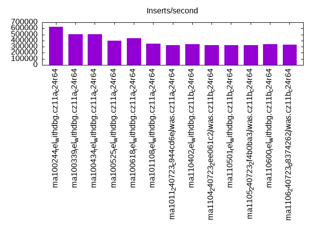
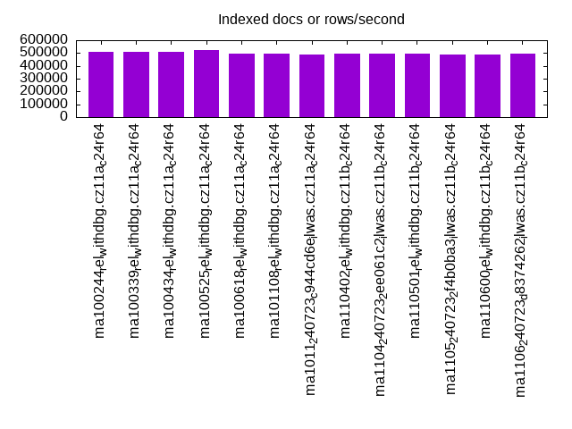
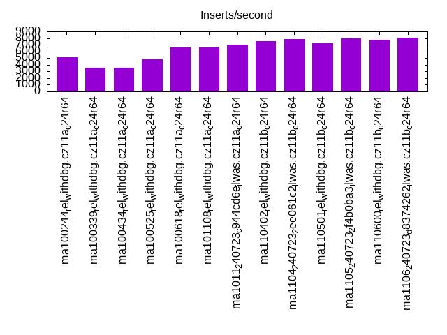
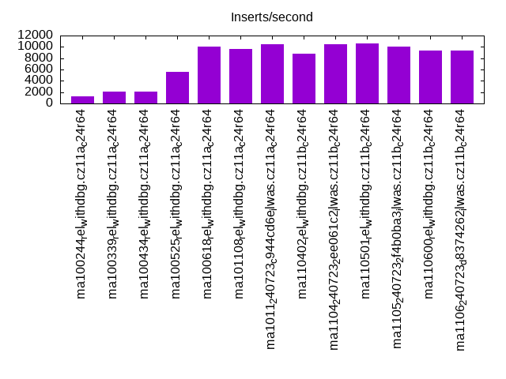
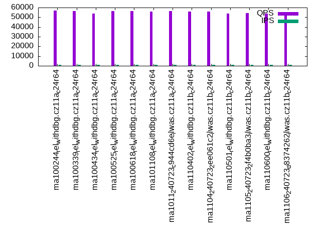
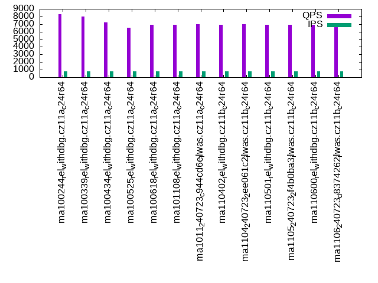
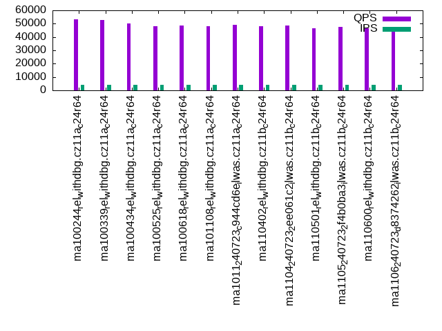
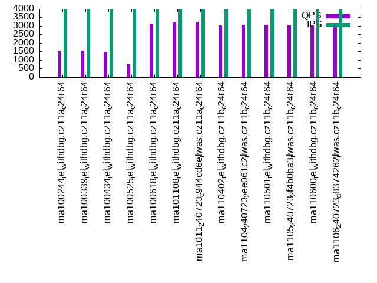
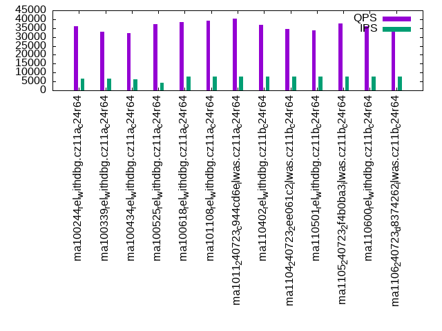
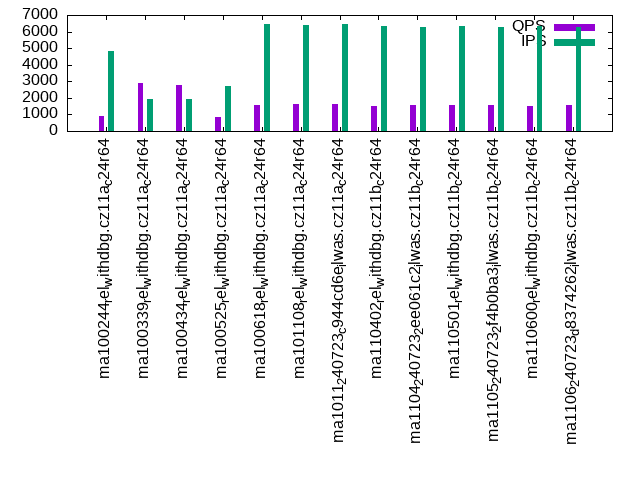

This is a report for the insert benchmark with 1024M docs and 8 client(s). It is generated by scripts (bash, awk, sed) and Tufte might not be impressed. An overview of the insert benchmark is here and a short update is here. Below, by DBMS, I mean DBMS+version.config. An example is my8020.c10b40 where my means MySQL, 8020 is version 8.0.20 and c10b40 is the name for the configuration file.
The test server has is a c2d-standard-30 with HT off, 16 cores, 64G RAM, Ubuntu 22.04 and ext4 using SW RAID 0 and 2 NVMe devices. The benchmark was run with 8 clients and there were 1 or 3 connections per client (1 for queries or inserts without rate limits, 1+1 for rate limited inserts+deletes). It uses 8 tables with a table per client. It loads 128M rows per table without secondary indexes, creates 3 secondary indexes per table, then inserts 4m+1m rows per table with a delete per insert to avoid growing the table. It then does 6 read+write tests for 1800s each that do queries as fast as possible with 100,100,500,500,1000,1000 inserts/s and the same for deletes/s per client concurrent with the queries. The database is larger than memory. Clients and the DBMS share one server. The per-database configs are in the per-database subdirectories here.
The tested DBMS are:
The numbers are inserts/s for l.i0, l.i1 and l.i2, indexed docs (or rows) /s for l.x and queries/s for qr100, qp100 thru qr1000, qp1000" The values are the average rate over the entire test for inserts (IPS) and queries (QPS). The range of values for IPS and QPS is split into 3 parts: bottom 25%, middle 50%, top 25%. Values in the bottom 25% have a red background, values in the top 25% have a green background and values in the middle have no color. A gray background is used for values that can be ignored because the DBMS did not sustain the target insert rate. Red backgrounds are not used when the minimum value is within 80% of the max value.
| dbms | l.i0 | l.x | l.i1 | l.i2 | qr100 | qp100 | qr500 | qp500 | qr1000 | qp1000 |
|---|---|---|---|---|---|---|---|---|---|---|
| ma100244_rel_withdbg.cz11a_c24r64 | 626683 | 508189 | 5097 | 1252 | 56712 | 8295 | 53028 | 1538 | 35970 | 890 |
| ma100339_rel_withdbg.cz11a_c24r64 | 502207 | 510469 | 3610 | 2098 | 56219 | 8027 | 52819 | 1538 | 33165 | 2893 |
| ma100434_rel_withdbg.cz11a_c24r64 | 505929 | 509453 | 3551 | 2042 | 53623 | 7210 | 50394 | 1498 | 32355 | 2775 |
| ma100525_rel_withdbg.cz11a_c24r64 | 396592 | 524053 | 4826 | 5540 | 56250 | 6495 | 48266 | 769 | 37284 | 855 |
| ma100618_rel_withdbg.cz11a_c24r64 | 436116 | 492544 | 6541 | 10025 | 56563 | 6870 | 48742 | 3153 | 38554 | 1595 |
| ma101108_rel_withdbg.cz11a_c24r64 | 353469 | 495164 | 6592 | 9615 | 55885 | 6894 | 48087 | 3207 | 39082 | 1625 |
| ma1011_240723_c944cd6e_ilwas.cz11a_c24r64 | 329260 | 491599 | 7056 | 10512 | 56172 | 6954 | 49245 | 3254 | 40230 | 1604 |
| ma110402_rel_withdbg.cz11b_c24r64 | 339861 | 493494 | 7491 | 8782 | 55694 | 6938 | 48034 | 3033 | 36776 | 1532 |
| ma1104_240723_2ee061c2_ilwas.cz11b_c24r64 | 326115 | 493019 | 7837 | 10526 | 55787 | 6971 | 48487 | 3065 | 34443 | 1559 |
| ma110501_rel_withdbg.cz11b_c24r64 | 327261 | 495164 | 7271 | 10652 | 53935 | 6939 | 46449 | 3059 | 33826 | 1542 |
| ma1105_240723_2f4b0ba3_ilwas.cz11b_c24r64 | 327470 | 490892 | 7986 | 10025 | 54200 | 6933 | 47420 | 3050 | 37598 | 1555 |
| ma110600_rel_withdbg.cz11b_c24r64 | 341447 | 490187 | 7744 | 9281 | 53845 | 6892 | 46301 | 3030 | 36114 | 1528 |
| ma1106_240723_d8374262_ilwas.cz11b_c24r64 | 333116 | 492071 | 8026 | 9401 | 54365 | 6926 | 47013 | 3019 | 35014 | 1555 |
This table has relative throughput, throughput for the DBMS relative to the DBMS in the first line, using the absolute throughput from the previous table. Values less than 0.95 have a yellow background. Values greater than 1.05 have a blue background.
| dbms | l.i0 | l.x | l.i1 | l.i2 | qr100 | qp100 | qr500 | qp500 | qr1000 | qp1000 |
|---|---|---|---|---|---|---|---|---|---|---|
| ma100244_rel_withdbg.cz11a_c24r64 | 1.00 | 1.00 | 1.00 | 1.00 | 1.00 | 1.00 | 1.00 | 1.00 | 1.00 | 1.00 |
| ma100339_rel_withdbg.cz11a_c24r64 | 0.80 | 1.00 | 0.71 | 1.68 | 0.99 | 0.97 | 1.00 | 1.00 | 0.92 | 3.25 |
| ma100434_rel_withdbg.cz11a_c24r64 | 0.81 | 1.00 | 0.70 | 1.63 | 0.95 | 0.87 | 0.95 | 0.97 | 0.90 | 3.12 |
| ma100525_rel_withdbg.cz11a_c24r64 | 0.63 | 1.03 | 0.95 | 4.42 | 0.99 | 0.78 | 0.91 | 0.50 | 1.04 | 0.96 |
| ma100618_rel_withdbg.cz11a_c24r64 | 0.70 | 0.97 | 1.28 | 8.01 | 1.00 | 0.83 | 0.92 | 2.05 | 1.07 | 1.79 |
| ma101108_rel_withdbg.cz11a_c24r64 | 0.56 | 0.97 | 1.29 | 7.68 | 0.99 | 0.83 | 0.91 | 2.09 | 1.09 | 1.83 |
| ma1011_240723_c944cd6e_ilwas.cz11a_c24r64 | 0.53 | 0.97 | 1.38 | 8.40 | 0.99 | 0.84 | 0.93 | 2.12 | 1.12 | 1.80 |
| ma110402_rel_withdbg.cz11b_c24r64 | 0.54 | 0.97 | 1.47 | 7.01 | 0.98 | 0.84 | 0.91 | 1.97 | 1.02 | 1.72 |
| ma1104_240723_2ee061c2_ilwas.cz11b_c24r64 | 0.52 | 0.97 | 1.54 | 8.41 | 0.98 | 0.84 | 0.91 | 1.99 | 0.96 | 1.75 |
| ma110501_rel_withdbg.cz11b_c24r64 | 0.52 | 0.97 | 1.43 | 8.51 | 0.95 | 0.84 | 0.88 | 1.99 | 0.94 | 1.73 |
| ma1105_240723_2f4b0ba3_ilwas.cz11b_c24r64 | 0.52 | 0.97 | 1.57 | 8.01 | 0.96 | 0.84 | 0.89 | 1.98 | 1.05 | 1.75 |
| ma110600_rel_withdbg.cz11b_c24r64 | 0.54 | 0.96 | 1.52 | 7.41 | 0.95 | 0.83 | 0.87 | 1.97 | 1.00 | 1.72 |
| ma1106_240723_d8374262_ilwas.cz11b_c24r64 | 0.53 | 0.97 | 1.57 | 7.51 | 0.96 | 0.83 | 0.89 | 1.96 | 0.97 | 1.75 |
This lists the average rate of inserts/s for the tests that do inserts concurrent with queries. For such tests the query rate is listed in the table above. The read+write tests are setup so that the insert rate should match the target rate every second. Cells that are not at least 95% of the target have a red background to indicate a failure to satisfy the target.
| dbms | qr100.L1 | qp100.L2 | qr500.L3 | qp500.L4 | qr1000.L5 | qp1000.L6 |
|---|---|---|---|---|---|---|
| ma100244_rel_withdbg.cz11a_c24r64 | 796 | 796 | 3978 | 3980 | 6481 | 4810 |
| ma100339_rel_withdbg.cz11a_c24r64 | 796 | 796 | 3978 | 3980 | 6507 | 1926 |
| ma100434_rel_withdbg.cz11a_c24r64 | 796 | 796 | 3978 | 3980 | 6377 | 1944 |
| ma100525_rel_withdbg.cz11a_c24r64 | 796 | 796 | 3943 | 3976 | 4182 | 2731 |
| ma100618_rel_withdbg.cz11a_c24r64 | 796 | 796 | 3978 | 3978 | 7943 | 6475 |
| ma101108_rel_withdbg.cz11a_c24r64 | 796 | 796 | 3978 | 3978 | 7947 | 6423 |
| ma1011_240723_c944cd6e_ilwas.cz11a_c24r64 | 796 | 796 | 3978 | 3980 | 7947 | 6428 |
| ma110402_rel_withdbg.cz11b_c24r64 | 796 | 796 | 3978 | 3978 | 7934 | 6355 |
| ma1104_240723_2ee061c2_ilwas.cz11b_c24r64 | 796 | 796 | 3978 | 3980 | 7938 | 6288 |
| ma110501_rel_withdbg.cz11b_c24r64 | 796 | 796 | 3978 | 3978 | 7943 | 6321 |
| ma1105_240723_2f4b0ba3_ilwas.cz11b_c24r64 | 796 | 796 | 3978 | 3980 | 7934 | 6294 |
| ma110600_rel_withdbg.cz11b_c24r64 | 796 | 796 | 3978 | 3978 | 7934 | 6358 |
| ma1106_240723_d8374262_ilwas.cz11b_c24r64 | 796 | 796 | 3978 | 3978 | 7938 | 6302 |
| target | 800 | 800 | 4000 | 4000 | 8000 | 8000 |
l.i0: load without secondary indexes. Graphs for performance per 1-second interval are here.
Average throughput:
Insert response time histogram: each cell has the percentage of responses that take <= the time in the header and max is the max response time in seconds. For the max column values in the top 25% of the range have a red background and in the bottom 25% of the range have a green background. The red background is not used when the min value is within 80% of the max value.
| dbms | 256us | 1ms | 4ms | 16ms | 64ms | 256ms | 1s | 4s | 16s | gt | max |
|---|---|---|---|---|---|---|---|---|---|---|---|
| ma100244_rel_withdbg.cz11a_c24r64 | 24.857 | 75.033 | 0.036 | 0.031 | 0.009 | 0.034 | 0.730 | ||||
| ma100339_rel_withdbg.cz11a_c24r64 | 20.710 | 78.962 | 0.260 | 0.030 | 0.004 | 0.034 | 0.758 | ||||
| ma100434_rel_withdbg.cz11a_c24r64 | 20.283 | 79.365 | 0.281 | 0.033 | 0.005 | 0.034 | 0.703 | ||||
| ma100525_rel_withdbg.cz11a_c24r64 | 6.393 | 93.181 | 0.151 | 0.161 | 0.079 | 0.034 | 0.448 | ||||
| ma100618_rel_withdbg.cz11a_c24r64 | 17.875 | 81.763 | 0.281 | 0.043 | 0.004 | 0.034 | 0.502 | ||||
| ma101108_rel_withdbg.cz11a_c24r64 | 3.939 | 91.737 | 4.193 | 0.092 | 0.005 | 0.034 | 0.487 | ||||
| ma1011_240723_c944cd6e_ilwas.cz11a_c24r64 | 2.843 | 90.728 | 6.342 | 0.049 | 0.005 | 0.034 | 0.476 | ||||
| ma110402_rel_withdbg.cz11b_c24r64 | 3.415 | 90.791 | 5.657 | 0.099 | 0.005 | 0.034 | 0.469 | ||||
| ma1104_240723_2ee061c2_ilwas.cz11b_c24r64 | 1.910 | 91.755 | 6.249 | 0.050 | 0.004 | 0.034 | 0.478 | ||||
| ma110501_rel_withdbg.cz11b_c24r64 | 2.275 | 91.147 | 6.443 | 0.096 | 0.005 | 0.034 | 0.479 | ||||
| ma1105_240723_2f4b0ba3_ilwas.cz11b_c24r64 | 2.696 | 90.368 | 6.849 | 0.048 | 0.005 | 0.034 | 0.494 | ||||
| ma110600_rel_withdbg.cz11b_c24r64 | 3.337 | 90.963 | 5.565 | 0.096 | 0.005 | 0.034 | 0.486 | ||||
| ma1106_240723_d8374262_ilwas.cz11b_c24r64 | 3.835 | 90.056 | 6.026 | 0.045 | 0.004 | 0.034 | 0.470 |
Performance metrics for the DBMS listed above. Some are normalized by throughput, others are not. Legend for results is here.
ips qps rps rmbps wps wmbps rpq rkbpq wpi wkbpi csps cpups cspq cpupq dbgb1 dbgb2 rss maxop p50 p99 tag 626683 0 1 0.0 3382.9 226.8 0.000 0.000 0.005 0.371 67650 58.9 0.108 15 67.4 118.2 47.1 0.730 86407 38168 ma100244_rel_withdbg.cz11a_c24r64 502207 0 1 0.0 2808.0 195.1 0.000 0.000 0.006 0.398 52671 73.4 0.105 23 67.4 118.2 47.0 0.758 68127 31067 ma100339_rel_withdbg.cz11a_c24r64 505929 0 0 0.0 2808.9 195.3 0.000 0.000 0.006 0.395 52587 74.3 0.104 23 67.4 118.2 NA 0.703 67917 30867 ma100434_rel_withdbg.cz11a_c24r64 396592 0 0 0.0 2656.6 122.6 0.000 0.000 0.007 0.317 401630 60.5 1.013 24 67.4 118.2 45.9 0.448 52160 31676 ma100525_rel_withdbg.cz11a_c24r64 436116 0 0 0.0 2261.9 121.6 0.000 0.000 0.005 0.285 552194 63.0 1.266 23 67.4 118.2 45.7 0.502 56240 35859 ma100618_rel_withdbg.cz11a_c24r64 353469 0 1813 7.1 1852.6 101.7 0.005 0.021 0.005 0.295 226874 48.3 0.642 22 67.4 118.2 45.7 0.487 45851 27271 ma101108_rel_withdbg.cz11a_c24r64 329260 0 0 0.0 1722.8 94.7 0.000 0.000 0.005 0.294 261299 55.3 0.794 27 67.4 118.2 45.7 0.476 42167 28170 ma1011_240723_c944cd6e_ilwas.cz11a_c24r64 339861 0 1811 7.1 1790.7 97.9 0.005 0.021 0.005 0.295 222643 48.9 0.655 23 67.4 118.2 45.7 0.469 44066 26172 ma110402_rel_withdbg.cz11b_c24r64 326115 0 0 0.0 1720.1 93.8 0.000 0.000 0.005 0.295 305360 54.4 0.936 27 67.4 118.2 45.7 0.478 41656 27372 ma1104_240723_2ee061c2_ilwas.cz11b_c24r64 327261 0 1822 7.1 1725.7 94.3 0.006 0.022 0.005 0.295 252206 48.1 0.771 24 67.4 118.2 45.7 0.479 42367 26675 ma110501_rel_withdbg.cz11b_c24r64 327470 0 0 0.0 1729.9 94.2 0.000 0.000 0.005 0.294 272268 54.9 0.831 27 67.4 118.2 45.7 0.494 41867 28370 ma1105_240723_2f4b0ba3_ilwas.cz11b_c24r64 341447 0 1799 7.0 1795.5 98.2 0.005 0.021 0.005 0.295 226308 48.6 0.663 23 67.4 118.2 45.7 0.486 44255 27168 ma110600_rel_withdbg.cz11b_c24r64 333116 0 0 0.0 1754.6 95.8 0.000 0.000 0.005 0.295 285593 54.5 0.857 26 67.4 118.2 45.7 0.470 42655 28276 ma1106_240723_d8374262_ilwas.cz11b_c24r64
l.x: create secondary indexes.
Average throughput:
Performance metrics for the DBMS listed above. Some are normalized by throughput, others are not. Legend for results is here.
ips qps rps rmbps wps wmbps rpq rkbpq wpi wkbpi csps cpups cspq cpupq dbgb1 dbgb2 rss maxop p50 p99 tag 508189 0 2173 426.4 3052.7 515.6 0.004 0.859 0.006 1.039 9636 14.9 0.019 5 155.1 205.9 47.4 0.004 NA NA ma100244_rel_withdbg.cz11a_c24r64 510469 0 2646 427.7 2987.3 515.8 0.005 0.858 0.006 1.035 11167 15.2 0.022 5 155.1 205.9 47.4 0.004 NA NA ma100339_rel_withdbg.cz11a_c24r64 509453 0 2360 426.0 3094.3 517.9 0.005 0.856 0.006 1.041 10239 15.0 0.020 5 153.5 204.3 NA 0.001 NA NA ma100434_rel_withdbg.cz11a_c24r64 524053 0 2387 436.7 2836.3 500.7 0.005 0.853 0.005 0.978 13319 17.9 0.025 5 153.5 204.3 46.2 0.004 NA NA ma100525_rel_withdbg.cz11a_c24r64 492544 0 3013 424.1 2765.2 473.0 0.006 0.882 0.006 0.983 12571 17.7 0.026 6 142.8 193.6 45.8 0.002 NA NA ma100618_rel_withdbg.cz11a_c24r64 495164 0 3049 425.5 2720.2 473.3 0.006 0.880 0.005 0.979 11925 17.0 0.024 5 142.8 193.6 45.9 0.002 NA NA ma101108_rel_withdbg.cz11a_c24r64 491599 0 2997 423.0 2700.4 469.8 0.006 0.881 0.005 0.979 11822 17.8 0.024 6 142.8 193.6 45.9 0.002 NA NA ma1011_240723_c944cd6e_ilwas.cz11a_c24r64 493494 0 2970 424.0 2764.6 471.8 0.006 0.880 0.006 0.979 12098 18.4 0.025 6 142.8 193.6 45.9 0.002 NA NA ma110402_rel_withdbg.cz11b_c24r64 493019 0 2972 424.1 2724.0 471.0 0.006 0.881 0.006 0.978 11949 18.3 0.024 6 142.8 193.6 45.9 0.002 NA NA ma1104_240723_2ee061c2_ilwas.cz11b_c24r64 495164 0 3032 425.4 2756.0 473.7 0.006 0.880 0.006 0.980 12258 17.0 0.025 5 142.8 193.6 45.9 0.003 NA NA ma110501_rel_withdbg.cz11b_c24r64 490892 0 2954 421.9 2779.2 469.9 0.006 0.880 0.006 0.980 12118 17.6 0.025 6 142.8 193.6 45.9 0.003 NA NA ma1105_240723_2f4b0ba3_ilwas.cz11b_c24r64 490187 0 2975 421.7 2731.4 469.0 0.006 0.881 0.006 0.980 11957 17.6 0.024 6 142.8 193.6 45.9 0.003 NA NA ma110600_rel_withdbg.cz11b_c24r64 492071 0 2990 422.9 2714.2 469.9 0.006 0.880 0.006 0.978 12061 17.5 0.025 6 142.8 193.6 45.9 0.003 NA NA ma1106_240723_d8374262_ilwas.cz11b_c24r64
l.i1: continue load after secondary indexes created with 50 inserts per transaction. Graphs for performance per 1-second interval are here.
Average throughput:
Insert response time histogram: each cell has the percentage of responses that take <= the time in the header and max is the max response time in seconds. For the max column values in the top 25% of the range have a red background and in the bottom 25% of the range have a green background. The red background is not used when the min value is within 80% of the max value.
| dbms | 256us | 1ms | 4ms | 16ms | 64ms | 256ms | 1s | 4s | 16s | gt | max |
|---|---|---|---|---|---|---|---|---|---|---|---|
| ma100244_rel_withdbg.cz11a_c24r64 | 0.059 | 48.681 | 50.093 | 1.167 | 0.921 | ||||||
| ma100339_rel_withdbg.cz11a_c24r64 | 0.062 | 43.328 | 40.800 | 15.810 | 0.758 | ||||||
| ma100434_rel_withdbg.cz11a_c24r64 | 0.026 | 41.528 | 42.369 | 16.077 | 0.771 | ||||||
| ma100525_rel_withdbg.cz11a_c24r64 | 0.274 | 51.783 | 47.573 | 0.370 | 0.762 | ||||||
| ma100618_rel_withdbg.cz11a_c24r64 | 2.086 | 80.115 | 14.853 | 2.811 | 0.129 | 0.003 | 0.002 | 36.893 | |||
| ma101108_rel_withdbg.cz11a_c24r64 | 1.543 | 80.552 | 15.063 | 2.691 | 0.146 | 0.004 | 0.001 | 47.108 | |||
| ma1011_240723_c944cd6e_ilwas.cz11a_c24r64 | nonzero | 3.194 | 81.417 | 13.318 | 1.910 | 0.155 | 0.004 | 0.002 | 37.162 | ||
| ma110402_rel_withdbg.cz11b_c24r64 | 0.001 | 2.626 | 81.833 | 14.750 | 0.568 | 0.210 | 0.007 | 0.005 | 34.043 | ||
| ma1104_240723_2ee061c2_ilwas.cz11b_c24r64 | 0.006 | 3.625 | 82.583 | 13.323 | 0.257 | 0.193 | 0.009 | 0.005 | 35.004 | ||
| ma110501_rel_withdbg.cz11b_c24r64 | 0.001 | 2.220 | 81.679 | 15.052 | 0.838 | 0.197 | 0.008 | 0.005 | 39.733 | ||
| ma1105_240723_2f4b0ba3_ilwas.cz11b_c24r64 | 1.092 | 8.167 | 76.908 | 12.885 | 0.762 | 0.174 | 0.008 | 0.005 | 37.713 | ||
| ma110600_rel_withdbg.cz11b_c24r64 | 0.009 | 3.828 | 81.629 | 13.970 | 0.358 | 0.193 | 0.008 | 0.005 | 42.317 | ||
| ma1106_240723_d8374262_ilwas.cz11b_c24r64 | nonzero | 3.790 | 83.322 | 12.424 | 0.271 | 0.177 | 0.010 | 0.005 | 35.347 |
Delete response time histogram: each cell has the percentage of responses that take <= the time in the header and max is the max response time in seconds. For the max column values in the top 25% of the range have a red background and in the bottom 25% of the range have a green background. The red background is not used when the min value is within 80% of the max value.
| dbms | 256us | 1ms | 4ms | 16ms | 64ms | 256ms | 1s | 4s | 16s | gt | max |
|---|---|---|---|---|---|---|---|---|---|---|---|
| ma100244_rel_withdbg.cz11a_c24r64 | 0.732 | 65.175 | 33.235 | 0.858 | 0.621 | ||||||
| ma100339_rel_withdbg.cz11a_c24r64 | 0.852 | 60.137 | 23.531 | 15.481 | 0.754 | ||||||
| ma100434_rel_withdbg.cz11a_c24r64 | 0.565 | 59.097 | 24.603 | 15.736 | 0.675 | ||||||
| ma100525_rel_withdbg.cz11a_c24r64 | nonzero | 0.771 | 75.821 | 23.348 | 0.060 | nonzero | 1.116 | ||||
| ma100618_rel_withdbg.cz11a_c24r64 | nonzero | 11.341 | 79.814 | 6.793 | 2.030 | 0.020 | 0.002 | 0.001 | 23.192 | ||
| ma101108_rel_withdbg.cz11a_c24r64 | 10.722 | 80.768 | 6.539 | 1.948 | 0.020 | 0.002 | 12.208 | ||||
| ma1011_240723_c944cd6e_ilwas.cz11a_c24r64 | 0.003 | 13.301 | 80.305 | 4.978 | 1.397 | 0.013 | 0.002 | nonzero | 22.205 | ||
| ma110402_rel_withdbg.cz11b_c24r64 | 0.007 | 8.758 | 84.762 | 5.828 | 0.472 | 0.165 | 0.006 | 0.002 | 29.809 | ||
| ma1104_240723_2ee061c2_ilwas.cz11b_c24r64 | 0.029 | 9.831 | 85.274 | 4.457 | 0.249 | 0.150 | 0.007 | 0.002 | 25.433 | ||
| ma110501_rel_withdbg.cz11b_c24r64 | 0.006 | 8.602 | 84.046 | 6.518 | 0.655 | 0.163 | 0.007 | 0.002 | 30.514 | ||
| ma1105_240723_2f4b0ba3_ilwas.cz11b_c24r64 | 0.001 | 1.287 | 18.768 | 74.289 | 4.896 | 0.622 | 0.129 | 0.006 | 0.003 | 32.808 | |
| ma110600_rel_withdbg.cz11b_c24r64 | 0.035 | 9.893 | 84.423 | 5.173 | 0.311 | 0.156 | 0.007 | 0.002 | 26.515 | ||
| ma1106_240723_d8374262_ilwas.cz11b_c24r64 | 0.006 | 11.377 | 84.211 | 3.994 | 0.260 | 0.143 | 0.006 | 0.003 | 20.126 |
Performance metrics for the DBMS listed above. Some are normalized by throughput, others are not. Legend for results is here.
ips qps rps rmbps wps wmbps rpq rkbpq wpi wkbpi csps cpups cspq cpupq dbgb1 dbgb2 rss maxop p50 p99 tag 5097 0 14237 222.5 26636.7 498.6 2.793 44.691 5.226 100.173 158981 15.0 31.191 471 214.9 267.5 47.4 0.921 649 150 ma100244_rel_withdbg.cz11a_c24r64 3610 0 14372 224.6 25385.7 511.4 3.981 63.690 7.031 145.039 126913 13.4 35.151 594 212.6 264.7 47.4 0.758 499 150 ma100339_rel_withdbg.cz11a_c24r64 3551 0 14390 224.9 25391.6 511.1 4.052 64.837 7.150 147.378 127473 13.3 35.896 599 212.6 264.8 NA 0.771 499 150 ma100434_rel_withdbg.cz11a_c24r64 4826 0 12941 202.2 14624.7 439.3 2.682 42.905 3.031 93.223 169286 15.6 35.079 517 185.0 237.3 46.2 0.762 649 300 ma100525_rel_withdbg.cz11a_c24r64 6541 0 17092 267.1 17801.6 537.9 2.613 41.808 2.721 84.201 187496 13.5 28.664 330 170.5 221.4 45.9 36.893 750 0 ma100618_rel_withdbg.cz11a_c24r64 6592 0 17631 271.0 17858.8 538.8 2.674 42.096 2.709 83.698 195350 13.2 29.632 320 170.5 221.4 45.9 47.108 799 0 ma101108_rel_withdbg.cz11a_c24r64 7056 0 18122 283.2 18300.8 552.3 2.568 41.093 2.594 80.144 187427 19.7 26.562 447 170.6 221.4 45.9 37.162 999 0 ma1011_240723_c944cd6e_ilwas.cz11a_c24r64 7491 0 19866 305.3 18943.5 566.8 2.652 41.738 2.529 77.478 204623 14.3 27.317 305 170.6 221.4 45.9 34.043 1000 0 ma110402_rel_withdbg.cz11b_c24r64 7837 0 20102 314.1 19368.6 578.6 2.565 41.040 2.471 75.596 192258 21.4 24.531 437 170.6 221.4 45.9 35.004 1049 0 ma1104_240723_2ee061c2_ilwas.cz11b_c24r64 7271 0 19465 299.2 18924.5 562.0 2.677 42.137 2.603 79.149 201218 14.0 27.674 308 170.5 221.4 45.9 39.733 1049 0 ma110501_rel_withdbg.cz11b_c24r64 7986 0 18758 293.1 18859.2 564.0 2.349 37.581 2.362 72.314 180475 20.6 22.599 413 170.6 221.4 45.9 37.713 999 0 ma1105_240723_2f4b0ba3_ilwas.cz11b_c24r64 7744 0 20249 311.1 19191.5 573.8 2.615 41.137 2.478 75.876 207548 14.7 26.800 304 170.6 221.4 45.9 42.317 1049 0 ma110600_rel_withdbg.cz11b_c24r64 8026 0 19971 312.1 19494.2 578.8 2.488 39.813 2.429 73.848 191220 21.6 23.825 431 170.5 221.4 45.9 35.347 1049 0 ma1106_240723_d8374262_ilwas.cz11b_c24r64
l.i2: continue load after secondary indexes created with 5 inserts per transaction. Graphs for performance per 1-second interval are here.
Average throughput:
Insert response time histogram: each cell has the percentage of responses that take <= the time in the header and max is the max response time in seconds. For the max column values in the top 25% of the range have a red background and in the bottom 25% of the range have a green background. The red background is not used when the min value is within 80% of the max value.
| dbms | 256us | 1ms | 4ms | 16ms | 64ms | 256ms | 1s | 4s | 16s | gt | max |
|---|---|---|---|---|---|---|---|---|---|---|---|
| ma100244_rel_withdbg.cz11a_c24r64 | 0.015 | 0.523 | 17.852 | 17.662 | 60.109 | 3.839 | nonzero | 0.387 | |||
| ma100339_rel_withdbg.cz11a_c24r64 | 0.058 | 1.507 | 32.069 | 25.059 | 40.638 | 0.669 | nonzero | 0.391 | |||
| ma100434_rel_withdbg.cz11a_c24r64 | 0.042 | 1.279 | 31.070 | 25.574 | 41.290 | 0.744 | 0.001 | 0.369 | |||
| ma100525_rel_withdbg.cz11a_c24r64 | 0.164 | 3.395 | 40.725 | 46.443 | 9.258 | 0.012 | 0.002 | 0.794 | |||
| ma100618_rel_withdbg.cz11a_c24r64 | 0.246 | 8.538 | 62.873 | 26.754 | 1.563 | 0.025 | 0.001 | 0.304 | |||
| ma101108_rel_withdbg.cz11a_c24r64 | 0.033 | 3.389 | 66.526 | 28.511 | 1.524 | 0.017 | 0.001 | 0.338 | |||
| ma1011_240723_c944cd6e_ilwas.cz11a_c24r64 | 0.339 | 11.590 | 63.323 | 23.304 | 1.402 | 0.041 | 0.001 | 0.345 | |||
| ma110402_rel_withdbg.cz11b_c24r64 | 0.179 | 8.359 | 67.717 | 21.866 | 1.388 | 0.462 | 0.028 | 0.548 | |||
| ma1104_240723_2ee061c2_ilwas.cz11b_c24r64 | 1.195 | 23.322 | 55.140 | 18.803 | 1.183 | 0.347 | 0.010 | 0.481 | |||
| ma110501_rel_withdbg.cz11b_c24r64 | 0.173 | 9.781 | 66.890 | 22.009 | 1.123 | 0.023 | nonzero | 0.316 | |||
| ma1105_240723_2f4b0ba3_ilwas.cz11b_c24r64 | 0.971 | 20.976 | 57.079 | 19.318 | 1.361 | 0.294 | 0.001 | 0.404 | |||
| ma110600_rel_withdbg.cz11b_c24r64 | 0.187 | 9.620 | 66.085 | 22.447 | 1.298 | 0.354 | 0.010 | 0.637 | |||
| ma1106_240723_d8374262_ilwas.cz11b_c24r64 | 0.406 | 11.744 | 63.056 | 23.110 | 1.297 | 0.357 | 0.029 | 0.909 |
Delete response time histogram: each cell has the percentage of responses that take <= the time in the header and max is the max response time in seconds. For the max column values in the top 25% of the range have a red background and in the bottom 25% of the range have a green background. The red background is not used when the min value is within 80% of the max value.
| dbms | 256us | 1ms | 4ms | 16ms | 64ms | 256ms | 1s | 4s | 16s | gt | max |
|---|---|---|---|---|---|---|---|---|---|---|---|
| ma100244_rel_withdbg.cz11a_c24r64 | 0.086 | 2.043 | 26.873 | 8.439 | 60.357 | 2.203 | 0.251 | ||||
| ma100339_rel_withdbg.cz11a_c24r64 | 0.263 | 4.458 | 43.338 | 12.385 | 39.223 | 0.333 | nonzero | 0.326 | |||
| ma100434_rel_withdbg.cz11a_c24r64 | 0.189 | 3.807 | 42.844 | 12.875 | 39.908 | 0.376 | 0.001 | 0.394 | |||
| ma100525_rel_withdbg.cz11a_c24r64 | 0.476 | 6.221 | 49.699 | 37.407 | 6.185 | 0.008 | 0.003 | 0.851 | |||
| ma100618_rel_withdbg.cz11a_c24r64 | 0.618 | 12.315 | 63.352 | 22.528 | 1.169 | 0.017 | 0.001 | 0.311 | |||
| ma101108_rel_withdbg.cz11a_c24r64 | 0.092 | 5.722 | 68.898 | 24.120 | 1.154 | 0.013 | 0.001 | 0.293 | |||
| ma1011_240723_c944cd6e_ilwas.cz11a_c24r64 | 1.000 | 16.858 | 61.793 | 19.280 | 1.042 | 0.026 | nonzero | 0.331 | |||
| ma110402_rel_withdbg.cz11b_c24r64 | 0.370 | 11.146 | 68.221 | 18.634 | 1.176 | 0.437 | 0.017 | 0.481 | |||
| ma1104_240723_2ee061c2_ilwas.cz11b_c24r64 | 2.203 | 27.378 | 52.765 | 16.335 | 0.990 | 0.323 | 0.005 | 0.544 | |||
| ma110501_rel_withdbg.cz11b_c24r64 | 0.394 | 12.851 | 67.071 | 18.764 | 0.901 | 0.019 | nonzero | 0.315 | |||
| ma1105_240723_2f4b0ba3_ilwas.cz11b_c24r64 | 1.819 | 24.902 | 55.163 | 16.714 | 1.146 | 0.254 | 0.001 | 0.384 | |||
| ma110600_rel_withdbg.cz11b_c24r64 | 0.392 | 12.617 | 66.275 | 19.292 | 1.087 | 0.333 | 0.005 | 0.524 | |||
| ma1106_240723_d8374262_ilwas.cz11b_c24r64 | 0.774 | 15.704 | 62.095 | 20.004 | 1.063 | 0.343 | 0.018 | 0.557 |
Performance metrics for the DBMS listed above. Some are normalized by throughput, others are not. Legend for results is here.
ips qps rps rmbps wps wmbps rpq rkbpq wpi wkbpi csps cpups cspq cpupq dbgb1 dbgb2 rss maxop p50 p99 tag 1252 0 14471 226.1 23412.0 531.0 11.559 184.951 18.701 434.360 98855 16.4 78.964 2096 214.9 267.6 47.4 0.387 95 75 ma100244_rel_withdbg.cz11a_c24r64 2098 0 14164 221.3 22791.9 536.8 6.751 108.020 10.864 261.993 107043 15.4 51.022 1174 212.6 264.7 47.2 0.391 130 85 ma100339_rel_withdbg.cz11a_c24r64 2042 0 14192 221.8 22705.4 536.5 6.951 111.212 11.120 269.084 106546 15.2 52.182 1191 212.6 264.8 NA 0.369 125 85 ma100434_rel_withdbg.cz11a_c24r64 5540 0 12807 200.1 14934.7 456.6 2.312 36.986 2.696 84.387 178036 19.6 32.136 566 185.0 237.4 46.0 0.794 644 285 ma100525_rel_withdbg.cz11a_c24r64 10025 0 21591 337.4 18485.1 571.8 2.154 34.459 1.844 58.406 242578 22.8 24.197 364 170.6 221.4 45.9 0.304 1299 1018 ma100618_rel_withdbg.cz11a_c24r64 9615 0 24006 351.8 18692.7 576.7 2.497 37.467 1.944 61.412 252946 22.6 26.307 376 170.6 221.4 45.9 0.338 1314 1074 ma101108_rel_withdbg.cz11a_c24r64 10512 0 21310 333.0 18663.7 577.3 2.027 32.433 1.775 56.229 233194 29.8 22.183 454 170.6 221.5 45.9 0.345 1264 974 ma1011_240723_c944cd6e_ilwas.cz11a_c24r64 8782 0 20003 291.2 17958.0 551.4 2.278 33.960 2.045 64.301 218242 19.8 24.852 361 170.6 221.4 45.9 0.548 1655 30 ma110402_rel_withdbg.cz11b_c24r64 10526 0 18395 287.4 18185.8 561.6 1.748 27.961 1.728 54.633 209835 27.9 19.934 424 170.6 221.4 45.9 0.481 1259 25 ma1104_240723_2ee061c2_ilwas.cz11b_c24r64 10652 0 23310 338.5 18742.5 575.5 2.188 32.543 1.759 55.325 242309 23.3 22.747 350 170.6 221.4 45.9 0.316 1219 999 ma110501_rel_withdbg.cz11b_c24r64 10025 0 18207 284.5 17733.8 546.5 1.816 29.058 1.769 55.823 202438 26.9 20.193 429 170.6 221.4 45.9 0.404 1643 1214 ma1105_240723_2f4b0ba3_ilwas.cz11b_c24r64 9281 0 20688 300.8 18047.2 555.0 2.229 33.190 1.945 61.232 223604 20.7 24.093 357 170.6 221.4 45.9 0.637 1359 30 ma110600_rel_withdbg.cz11b_c24r64 9401 0 19599 306.2 18769.6 573.7 2.085 33.357 1.997 62.492 212657 27.2 22.621 463 170.6 221.4 45.9 0.909 1209 20 ma1106_240723_d8374262_ilwas.cz11b_c24r64
qr100.L1: range queries with 100 insert/s per client. Graphs for performance per 1-second interval are here.
Average throughput:
Query response time histogram: each cell has the percentage of responses that take <= the time in the header and max is the max response time in seconds. For max values in the top 25% of the range have a red background and in the bottom 25% of the range have a green background. The red background is not used when the min value is within 80% of the max value.
| dbms | 256us | 1ms | 4ms | 16ms | 64ms | 256ms | 1s | 4s | 16s | gt | max |
|---|---|---|---|---|---|---|---|---|---|---|---|
| ma100244_rel_withdbg.cz11a_c24r64 | 99.515 | 0.416 | 0.068 | 0.001 | nonzero | 0.019 | |||||
| ma100339_rel_withdbg.cz11a_c24r64 | 99.534 | 0.397 | 0.067 | 0.002 | nonzero | 0.028 | |||||
| ma100434_rel_withdbg.cz11a_c24r64 | 99.457 | 0.468 | 0.073 | 0.002 | nonzero | 0.034 | |||||
| ma100525_rel_withdbg.cz11a_c24r64 | 99.678 | 0.246 | 0.071 | 0.005 | 0.001 | nonzero | 0.080 | ||||
| ma100618_rel_withdbg.cz11a_c24r64 | 99.323 | 0.615 | 0.059 | 0.003 | nonzero | nonzero | 0.111 | ||||
| ma101108_rel_withdbg.cz11a_c24r64 | 99.290 | 0.643 | 0.063 | 0.003 | nonzero | nonzero | 0.138 | ||||
| ma1011_240723_c944cd6e_ilwas.cz11a_c24r64 | 99.361 | 0.577 | 0.058 | 0.003 | nonzero | nonzero | 0.093 | ||||
| ma110402_rel_withdbg.cz11b_c24r64 | 99.301 | 0.640 | 0.056 | 0.003 | nonzero | nonzero | 0.088 | ||||
| ma1104_240723_2ee061c2_ilwas.cz11b_c24r64 | 99.372 | 0.576 | 0.049 | 0.003 | nonzero | 0.020 | |||||
| ma110501_rel_withdbg.cz11b_c24r64 | 99.257 | 0.685 | 0.055 | 0.004 | nonzero | 0.046 | |||||
| ma1105_240723_2f4b0ba3_ilwas.cz11b_c24r64 | 99.333 | 0.611 | 0.053 | 0.003 | nonzero | nonzero | 0.083 | ||||
| ma110600_rel_withdbg.cz11b_c24r64 | 99.261 | 0.675 | 0.060 | 0.003 | nonzero | nonzero | 0.075 | ||||
| ma1106_240723_d8374262_ilwas.cz11b_c24r64 | 99.322 | 0.618 | 0.057 | 0.003 | nonzero | 0.034 |
Insert response time histogram: each cell has the percentage of responses that take <= the time in the header and max is the max response time in seconds. For max values in the top 25% of the range have a red background and in the bottom 25% of the range have a green background. The red background is not used when the min value is within 80% of the max value.
| dbms | 256us | 1ms | 4ms | 16ms | 64ms | 256ms | 1s | 4s | 16s | gt | max |
|---|---|---|---|---|---|---|---|---|---|---|---|
| ma100244_rel_withdbg.cz11a_c24r64 | 16.285 | 83.715 | 0.055 | ||||||||
| ma100339_rel_withdbg.cz11a_c24r64 | 37.285 | 62.715 | 0.055 | ||||||||
| ma100434_rel_withdbg.cz11a_c24r64 | 32.340 | 67.660 | 0.055 | ||||||||
| ma100525_rel_withdbg.cz11a_c24r64 | 0.007 | 13.347 | 61.021 | 25.625 | 0.236 | ||||||
| ma100618_rel_withdbg.cz11a_c24r64 | 0.003 | 57.115 | 42.705 | 0.177 | 0.138 | ||||||
| ma101108_rel_withdbg.cz11a_c24r64 | 61.295 | 38.663 | 0.042 | 0.169 | |||||||
| ma1011_240723_c944cd6e_ilwas.cz11a_c24r64 | 0.017 | 64.368 | 35.510 | 0.104 | 0.161 | ||||||
| ma110402_rel_withdbg.cz11b_c24r64 | 0.073 | 56.358 | 43.368 | 0.201 | 0.109 | ||||||
| ma1104_240723_2ee061c2_ilwas.cz11b_c24r64 | 0.899 | 60.417 | 38.674 | 0.010 | 0.081 | ||||||
| ma110501_rel_withdbg.cz11b_c24r64 | 0.028 | 58.510 | 41.455 | 0.007 | 0.081 | ||||||
| ma1105_240723_2f4b0ba3_ilwas.cz11b_c24r64 | 0.549 | 62.962 | 36.385 | 0.104 | 0.115 | ||||||
| ma110600_rel_withdbg.cz11b_c24r64 | 0.240 | 55.812 | 43.858 | 0.090 | 0.097 | ||||||
| ma1106_240723_d8374262_ilwas.cz11b_c24r64 | 0.389 | 61.250 | 38.358 | 0.003 | 0.080 |
Delete response time histogram: each cell has the percentage of responses that take <= the time in the header and max is the max response time in seconds. For max values in the top 25% of the range have a red background and in the bottom 25% of the range have a green background. The red background is not used when the min value is within 80% of the max value.
| dbms | 256us | 1ms | 4ms | 16ms | 64ms | 256ms | 1s | 4s | 16s | gt | max |
|---|---|---|---|---|---|---|---|---|---|---|---|
| ma100244_rel_withdbg.cz11a_c24r64 | 80.115 | 19.885 | 0.054 | ||||||||
| ma100339_rel_withdbg.cz11a_c24r64 | 84.274 | 15.726 | 0.042 | ||||||||
| ma100434_rel_withdbg.cz11a_c24r64 | 81.913 | 18.087 | 0.043 | ||||||||
| ma100525_rel_withdbg.cz11a_c24r64 | 0.059 | 22.812 | 67.347 | 9.781 | 0.201 | ||||||
| ma100618_rel_withdbg.cz11a_c24r64 | 0.104 | 78.163 | 21.594 | 0.139 | 0.136 | ||||||
| ma101108_rel_withdbg.cz11a_c24r64 | 0.007 | 81.865 | 18.090 | 0.038 | 0.169 | ||||||
| ma1011_240723_c944cd6e_ilwas.cz11a_c24r64 | 0.243 | 82.184 | 17.490 | 0.083 | 0.119 | ||||||
| ma110402_rel_withdbg.cz11b_c24r64 | 0.378 | 76.056 | 23.389 | 0.177 | 0.106 | ||||||
| ma1104_240723_2ee061c2_ilwas.cz11b_c24r64 | 1.910 | 75.868 | 22.215 | 0.007 | 0.072 | ||||||
| ma110501_rel_withdbg.cz11b_c24r64 | 0.264 | 76.823 | 22.906 | 0.007 | 0.073 | ||||||
| ma1105_240723_2f4b0ba3_ilwas.cz11b_c24r64 | 1.465 | 78.917 | 19.538 | 0.080 | 0.112 | ||||||
| ma110600_rel_withdbg.cz11b_c24r64 | 0.691 | 75.229 | 24.014 | 0.066 | 0.094 | ||||||
| ma1106_240723_d8374262_ilwas.cz11b_c24r64 | 1.215 | 77.316 | 21.465 | 0.003 | 0.076 |
Performance metrics for the DBMS listed above. Some are normalized by throughput, others are not. Legend for results is here.
ips qps rps rmbps wps wmbps rpq rkbpq wpi wkbpi csps cpups cspq cpupq dbgb1 dbgb2 rss maxop p50 p99 tag 796 56712 2269 35.5 8243.5 250.7 0.040 0.640 10.356 322.468 214338 52.5 3.779 148 214.9 267.6 47.2 0.019 7160 5003 ma100244_rel_withdbg.cz11a_c24r64 796 56219 2203 34.4 8100.8 246.0 0.039 0.627 10.177 316.465 213769 52.1 3.802 148 212.6 264.7 47.2 0.028 7112 5034 ma100339_rel_withdbg.cz11a_c24r64 796 53623 2271 35.5 8125.5 246.9 0.042 0.678 10.208 317.642 205435 52.1 3.831 155 212.6 264.8 NA 0.034 6793 4747 ma100434_rel_withdbg.cz11a_c24r64 796 56250 2194 34.3 2182.7 66.6 0.039 0.624 2.742 85.728 221323 51.2 3.935 146 185.0 237.4 46.0 0.080 7128 6393 ma100525_rel_withdbg.cz11a_c24r64 796 56563 2159 33.7 1068.1 33.9 0.038 0.611 1.343 43.673 219528 50.1 3.881 142 170.6 221.4 45.7 0.111 7131 3788 ma100618_rel_withdbg.cz11a_c24r64 796 55885 2187 33.8 1067.0 33.9 0.039 0.619 1.341 43.604 217410 50.2 3.890 144 170.6 221.4 45.7 0.138 7036 2190 ma101108_rel_withdbg.cz11a_c24r64 796 56172 2161 33.8 1068.9 34.0 0.038 0.615 1.343 43.674 214654 50.8 3.821 145 170.6 221.5 45.7 0.093 7144 6012 ma1011_240723_c944cd6e_ilwas.cz11a_c24r64 796 55694 2214 34.2 1090.0 34.6 0.040 0.629 1.370 44.571 217252 50.2 3.901 144 170.6 221.4 45.7 0.088 7064 1806 ma110402_rel_withdbg.cz11b_c24r64 796 55787 2190 34.2 1096.4 34.8 0.039 0.628 1.377 44.782 213579 50.8 3.828 146 170.6 221.4 45.7 0.020 7064 6523 ma1104_240723_2ee061c2_ilwas.cz11b_c24r64 796 53935 2213 34.2 1100.6 34.7 0.041 0.649 1.384 44.658 210084 50.2 3.895 149 170.6 221.4 45.7 0.046 6809 5644 ma110501_rel_withdbg.cz11b_c24r64 796 54200 2188 34.2 1097.1 34.8 0.040 0.646 1.378 44.788 207660 50.8 3.831 150 170.6 221.4 45.7 0.083 6841 2334 ma1105_240723_2f4b0ba3_ilwas.cz11b_c24r64 796 53845 2217 34.2 1093.7 34.7 0.041 0.651 1.375 44.678 210297 50.1 3.906 149 170.6 221.4 45.7 0.075 6841 2478 ma110600_rel_withdbg.cz11b_c24r64 796 54365 2181 34.1 1093.8 34.5 0.040 0.642 1.374 44.393 209607 50.8 3.856 150 170.6 221.4 45.7 0.034 6841 6169 ma1106_240723_d8374262_ilwas.cz11b_c24r64
qp100.L2: point queries with 100 insert/s per client. Graphs for performance per 1-second interval are here.
Average throughput:
Query response time histogram: each cell has the percentage of responses that take <= the time in the header and max is the max response time in seconds. For max values in the top 25% of the range have a red background and in the bottom 25% of the range have a green background. The red background is not used when the min value is within 80% of the max value.
| dbms | 256us | 1ms | 4ms | 16ms | 64ms | 256ms | 1s | 4s | 16s | gt | max |
|---|---|---|---|---|---|---|---|---|---|---|---|
| ma100244_rel_withdbg.cz11a_c24r64 | 24.081 | 27.807 | 48.018 | 0.090 | 0.005 | 0.038 | |||||
| ma100339_rel_withdbg.cz11a_c24r64 | 17.294 | 32.826 | 49.791 | 0.084 | 0.005 | 0.043 | |||||
| ma100434_rel_withdbg.cz11a_c24r64 | 10.345 | 32.045 | 57.508 | 0.096 | 0.006 | 0.042 | |||||
| ma100525_rel_withdbg.cz11a_c24r64 | 8.821 | 28.175 | 62.715 | 0.264 | 0.024 | 0.060 | |||||
| ma100618_rel_withdbg.cz11a_c24r64 | 1.537 | 39.557 | 58.580 | 0.295 | 0.030 | 0.001 | nonzero | 0.305 | |||
| ma101108_rel_withdbg.cz11a_c24r64 | 0.609 | 41.411 | 57.616 | 0.328 | 0.036 | nonzero | nonzero | 0.311 | |||
| ma1011_240723_c944cd6e_ilwas.cz11a_c24r64 | 0.717 | 42.617 | 56.291 | 0.334 | 0.040 | 0.001 | nonzero | 0.267 | |||
| ma110402_rel_withdbg.cz11b_c24r64 | 0.653 | 42.415 | 56.566 | 0.325 | 0.041 | nonzero | 0.242 | ||||
| ma1104_240723_2ee061c2_ilwas.cz11b_c24r64 | 0.716 | 42.997 | 55.903 | 0.340 | 0.044 | nonzero | nonzero | 0.257 | |||
| ma110501_rel_withdbg.cz11b_c24r64 | 0.638 | 42.555 | 56.411 | 0.351 | 0.045 | nonzero | 0.223 | ||||
| ma1105_240723_2f4b0ba3_ilwas.cz11b_c24r64 | 0.670 | 41.926 | 57.054 | 0.314 | 0.036 | nonzero | nonzero | 0.277 | |||
| ma110600_rel_withdbg.cz11b_c24r64 | 0.612 | 40.890 | 58.185 | 0.283 | 0.029 | nonzero | 0.240 | ||||
| ma1106_240723_d8374262_ilwas.cz11b_c24r64 | 0.629 | 41.805 | 57.214 | 0.317 | 0.035 | nonzero | nonzero | 0.301 |
Insert response time histogram: each cell has the percentage of responses that take <= the time in the header and max is the max response time in seconds. For max values in the top 25% of the range have a red background and in the bottom 25% of the range have a green background. The red background is not used when the min value is within 80% of the max value.
| dbms | 256us | 1ms | 4ms | 16ms | 64ms | 256ms | 1s | 4s | 16s | gt | max |
|---|---|---|---|---|---|---|---|---|---|---|---|
| ma100244_rel_withdbg.cz11a_c24r64 | 0.184 | 96.590 | 3.226 | 0.119 | |||||||
| ma100339_rel_withdbg.cz11a_c24r64 | 0.368 | 96.438 | 3.194 | 0.116 | |||||||
| ma100434_rel_withdbg.cz11a_c24r64 | 0.264 | 96.528 | 3.208 | 0.124 | |||||||
| ma100525_rel_withdbg.cz11a_c24r64 | 0.538 | 93.872 | 5.590 | 0.198 | |||||||
| ma100618_rel_withdbg.cz11a_c24r64 | 0.160 | 97.774 | 2.066 | 0.135 | |||||||
| ma101108_rel_withdbg.cz11a_c24r64 | 0.125 | 96.719 | 3.146 | 0.010 | 0.392 | ||||||
| ma1011_240723_c944cd6e_ilwas.cz11a_c24r64 | 0.194 | 94.465 | 5.312 | 0.028 | 0.358 | ||||||
| ma110402_rel_withdbg.cz11b_c24r64 | 0.149 | 96.531 | 3.309 | 0.010 | 0.305 | ||||||
| ma1104_240723_2ee061c2_ilwas.cz11b_c24r64 | 0.156 | 94.587 | 5.229 | 0.028 | 0.310 | ||||||
| ma110501_rel_withdbg.cz11b_c24r64 | 0.122 | 96.118 | 3.760 | 0.191 | |||||||
| ma1105_240723_2f4b0ba3_ilwas.cz11b_c24r64 | 0.139 | 96.545 | 3.281 | 0.035 | 0.332 | ||||||
| ma110600_rel_withdbg.cz11b_c24r64 | 0.132 | 98.278 | 1.590 | 0.144 | |||||||
| ma1106_240723_d8374262_ilwas.cz11b_c24r64 | 0.205 | 96.719 | 3.069 | 0.007 | 0.390 |
Delete response time histogram: each cell has the percentage of responses that take <= the time in the header and max is the max response time in seconds. For max values in the top 25% of the range have a red background and in the bottom 25% of the range have a green background. The red background is not used when the min value is within 80% of the max value.
| dbms | 256us | 1ms | 4ms | 16ms | 64ms | 256ms | 1s | 4s | 16s | gt | max |
|---|---|---|---|---|---|---|---|---|---|---|---|
| ma100244_rel_withdbg.cz11a_c24r64 | 1.094 | 97.378 | 1.528 | 0.107 | |||||||
| ma100339_rel_withdbg.cz11a_c24r64 | 1.153 | 97.118 | 1.729 | 0.110 | |||||||
| ma100434_rel_withdbg.cz11a_c24r64 | 1.038 | 97.306 | 1.656 | 0.117 | |||||||
| ma100525_rel_withdbg.cz11a_c24r64 | 1.344 | 94.451 | 4.205 | 0.187 | |||||||
| ma100618_rel_withdbg.cz11a_c24r64 | 0.503 | 98.375 | 1.122 | 0.127 | |||||||
| ma101108_rel_withdbg.cz11a_c24r64 | 0.368 | 98.205 | 1.420 | 0.007 | 0.453 | ||||||
| ma1011_240723_c944cd6e_ilwas.cz11a_c24r64 | 0.503 | 96.406 | 3.062 | 0.028 | 0.350 | ||||||
| ma110402_rel_withdbg.cz11b_c24r64 | 0.358 | 97.833 | 1.799 | 0.010 | 0.309 | ||||||
| ma1104_240723_2ee061c2_ilwas.cz11b_c24r64 | 0.524 | 96.205 | 3.247 | 0.024 | 0.313 | ||||||
| ma110501_rel_withdbg.cz11b_c24r64 | 0.361 | 97.535 | 2.104 | 0.156 | |||||||
| ma1105_240723_2f4b0ba3_ilwas.cz11b_c24r64 | 0.451 | 97.597 | 1.934 | 0.017 | 0.332 | ||||||
| ma110600_rel_withdbg.cz11b_c24r64 | 0.302 | 98.924 | 0.774 | 0.140 | |||||||
| ma1106_240723_d8374262_ilwas.cz11b_c24r64 | 0.517 | 97.660 | 1.816 | 0.007 | 0.345 |
Performance metrics for the DBMS listed above. Some are normalized by throughput, others are not. Legend for results is here.
ips qps rps rmbps wps wmbps rpq rkbpq wpi wkbpi csps cpups cspq cpupq dbgb1 dbgb2 rss maxop p50 p99 tag 796 8295 30763 480.7 7704.3 234.2 3.709 59.339 9.685 301.481 112173 18.2 13.523 351 214.9 267.6 47.2 0.038 959 432 ma100244_rel_withdbg.cz11a_c24r64 796 8027 31865 497.9 7668.6 232.7 3.970 63.514 9.634 299.400 113773 17.6 14.173 351 212.6 264.7 47.2 0.043 975 448 ma100339_rel_withdbg.cz11a_c24r64 796 7210 31724 495.7 7656.0 232.5 4.400 70.396 9.624 299.312 110336 17.1 15.302 379 212.6 264.8 NA 0.042 911 432 ma100434_rel_withdbg.cz11a_c24r64 796 6495 29310 458.0 6070.3 183.8 4.513 72.208 7.631 236.611 115490 14.6 17.782 360 185.0 237.4 46.0 0.060 847 368 ma100525_rel_withdbg.cz11a_c24r64 796 6870 32628 509.8 4647.8 140.1 4.749 75.992 5.843 180.359 118092 14.0 17.190 326 170.6 221.4 45.7 0.305 975 304 ma100618_rel_withdbg.cz11a_c24r64 796 6894 33056 516.2 4650.1 140.1 4.795 76.671 5.846 180.392 120164 14.1 17.430 327 170.6 221.4 45.7 0.311 911 320 ma101108_rel_withdbg.cz11a_c24r64 796 6954 33153 518.0 4654.4 140.3 4.767 76.277 5.851 180.570 117678 14.7 16.922 338 170.6 221.5 45.7 0.267 943 304 ma1011_240723_c944cd6e_ilwas.cz11a_c24r64 796 6938 33049 516.1 4655.0 140.3 4.763 76.167 5.852 180.550 122155 14.1 17.606 325 170.6 221.4 45.7 0.242 927 304 ma110402_rel_withdbg.cz11b_c24r64 796 6971 33053 516.5 4659.4 140.4 4.741 75.861 5.853 180.615 119407 14.6 17.128 335 170.6 221.4 45.7 0.257 975 320 ma1104_240723_2ee061c2_ilwas.cz11b_c24r64 796 6939 33061 516.3 4689.6 140.3 4.764 76.184 5.895 180.615 122094 14.5 17.595 334 170.6 221.4 45.7 0.223 943 320 ma110501_rel_withdbg.cz11b_c24r64 796 6933 33076 516.8 4659.7 140.4 4.771 76.330 5.854 180.632 119213 15.0 17.194 346 170.6 221.4 45.7 0.277 975 304 ma1105_240723_2f4b0ba3_ilwas.cz11b_c24r64 796 6892 32966 514.8 4647.8 140.0 4.783 76.487 5.843 180.262 121425 14.3 17.619 332 170.6 221.4 45.7 0.240 943 320 ma110600_rel_withdbg.cz11b_c24r64 796 6926 33044 516.3 4689.8 140.3 4.771 76.335 5.895 180.625 119250 15.0 17.218 347 170.6 221.4 45.7 0.301 943 320 ma1106_240723_d8374262_ilwas.cz11b_c24r64
qr500.L3: range queries with 500 insert/s per client. Graphs for performance per 1-second interval are here.
Average throughput:
Query response time histogram: each cell has the percentage of responses that take <= the time in the header and max is the max response time in seconds. For max values in the top 25% of the range have a red background and in the bottom 25% of the range have a green background. The red background is not used when the min value is within 80% of the max value.
| dbms | 256us | 1ms | 4ms | 16ms | 64ms | 256ms | 1s | 4s | 16s | gt | max |
|---|---|---|---|---|---|---|---|---|---|---|---|
| ma100244_rel_withdbg.cz11a_c24r64 | 98.623 | 1.250 | 0.117 | 0.008 | 0.001 | nonzero | 0.084 | ||||
| ma100339_rel_withdbg.cz11a_c24r64 | 98.761 | 1.118 | 0.113 | 0.007 | 0.001 | nonzero | 0.074 | ||||
| ma100434_rel_withdbg.cz11a_c24r64 | 98.576 | 1.293 | 0.121 | 0.009 | 0.001 | nonzero | 0.089 | ||||
| ma100525_rel_withdbg.cz11a_c24r64 | 98.716 | 1.008 | 0.200 | 0.072 | 0.004 | nonzero | 0.128 | ||||
| ma100618_rel_withdbg.cz11a_c24r64 | 96.658 | 3.085 | 0.217 | 0.038 | 0.001 | nonzero | nonzero | 0.306 | |||
| ma101108_rel_withdbg.cz11a_c24r64 | 96.553 | 3.171 | 0.236 | 0.039 | 0.001 | nonzero | 0.251 | ||||
| ma1011_240723_c944cd6e_ilwas.cz11a_c24r64 | 96.980 | 2.761 | 0.219 | 0.040 | 0.001 | nonzero | 0.236 | ||||
| ma110402_rel_withdbg.cz11b_c24r64 | 96.458 | 3.285 | 0.225 | 0.030 | 0.002 | nonzero | nonzero | 0.292 | |||
| ma1104_240723_2ee061c2_ilwas.cz11b_c24r64 | 96.764 | 2.958 | 0.242 | 0.034 | 0.002 | nonzero | nonzero | 0.334 | |||
| ma110501_rel_withdbg.cz11b_c24r64 | 96.223 | 3.502 | 0.241 | 0.032 | 0.002 | nonzero | nonzero | 0.279 | |||
| ma1105_240723_2f4b0ba3_ilwas.cz11b_c24r64 | 96.677 | 3.064 | 0.225 | 0.033 | 0.001 | nonzero | nonzero | 0.286 | |||
| ma110600_rel_withdbg.cz11b_c24r64 | 96.214 | 3.502 | 0.248 | 0.035 | 0.001 | nonzero | nonzero | 0.313 | |||
| ma1106_240723_d8374262_ilwas.cz11b_c24r64 | 96.585 | 3.130 | 0.249 | 0.034 | 0.001 | nonzero | nonzero | 0.316 |
Insert response time histogram: each cell has the percentage of responses that take <= the time in the header and max is the max response time in seconds. For max values in the top 25% of the range have a red background and in the bottom 25% of the range have a green background. The red background is not used when the min value is within 80% of the max value.
| dbms | 256us | 1ms | 4ms | 16ms | 64ms | 256ms | 1s | 4s | 16s | gt | max |
|---|---|---|---|---|---|---|---|---|---|---|---|
| ma100244_rel_withdbg.cz11a_c24r64 | 35.669 | 63.802 | 0.528 | 0.213 | |||||||
| ma100339_rel_withdbg.cz11a_c24r64 | 47.253 | 52.326 | 0.421 | 0.178 | |||||||
| ma100434_rel_withdbg.cz11a_c24r64 | 38.811 | 60.669 | 0.519 | 0.192 | |||||||
| ma100525_rel_withdbg.cz11a_c24r64 | 17.014 | 60.426 | 22.220 | 0.340 | 0.405 | ||||||
| ma100618_rel_withdbg.cz11a_c24r64 | 54.735 | 44.681 | 0.525 | 0.059 | 0.399 | ||||||
| ma101108_rel_withdbg.cz11a_c24r64 | 51.988 | 47.343 | 0.636 | 0.033 | 0.376 | ||||||
| ma1011_240723_c944cd6e_ilwas.cz11a_c24r64 | 57.272 | 42.199 | 0.503 | 0.026 | 0.375 | ||||||
| ma110402_rel_withdbg.cz11b_c24r64 | 51.957 | 47.313 | 0.632 | 0.098 | 0.415 | ||||||
| ma1104_240723_2ee061c2_ilwas.cz11b_c24r64 | 53.326 | 46.054 | 0.535 | 0.084 | 0.381 | ||||||
| ma110501_rel_withdbg.cz11b_c24r64 | 51.834 | 47.409 | 0.630 | 0.127 | 0.367 | ||||||
| ma1105_240723_2f4b0ba3_ilwas.cz11b_c24r64 | 54.151 | 45.288 | 0.507 | 0.055 | 0.396 | ||||||
| ma110600_rel_withdbg.cz11b_c24r64 | 49.952 | 49.383 | 0.551 | 0.115 | 0.368 | ||||||
| ma1106_240723_d8374262_ilwas.cz11b_c24r64 | 53.199 | 46.192 | 0.535 | 0.074 | 0.371 |
Delete response time histogram: each cell has the percentage of responses that take <= the time in the header and max is the max response time in seconds. For max values in the top 25% of the range have a red background and in the bottom 25% of the range have a green background. The red background is not used when the min value is within 80% of the max value.
| dbms | 256us | 1ms | 4ms | 16ms | 64ms | 256ms | 1s | 4s | 16s | gt | max |
|---|---|---|---|---|---|---|---|---|---|---|---|
| ma100244_rel_withdbg.cz11a_c24r64 | 86.699 | 13.003 | 0.298 | 0.169 | |||||||
| ma100339_rel_withdbg.cz11a_c24r64 | 90.549 | 9.224 | 0.228 | 0.182 | |||||||
| ma100434_rel_withdbg.cz11a_c24r64 | 89.098 | 10.660 | 0.242 | 0.159 | |||||||
| ma100525_rel_withdbg.cz11a_c24r64 | 25.317 | 57.596 | 17.069 | 0.017 | 0.315 | ||||||
| ma100618_rel_withdbg.cz11a_c24r64 | 76.758 | 22.863 | 0.327 | 0.052 | 0.395 | ||||||
| ma101108_rel_withdbg.cz11a_c24r64 | 73.522 | 26.044 | 0.409 | 0.025 | 0.375 | ||||||
| ma1011_240723_c944cd6e_ilwas.cz11a_c24r64 | 77.977 | 21.692 | 0.307 | 0.024 | 0.372 | ||||||
| ma110402_rel_withdbg.cz11b_c24r64 | 75.836 | 23.665 | 0.424 | 0.074 | 0.366 | ||||||
| ma1104_240723_2ee061c2_ilwas.cz11b_c24r64 | 74.692 | 24.919 | 0.328 | 0.061 | 0.368 | ||||||
| ma110501_rel_withdbg.cz11b_c24r64 | 75.395 | 24.129 | 0.383 | 0.092 | 0.371 | ||||||
| ma1105_240723_2f4b0ba3_ilwas.cz11b_c24r64 | 76.412 | 23.202 | 0.340 | 0.047 | 0.373 | ||||||
| ma110600_rel_withdbg.cz11b_c24r64 | 73.059 | 26.528 | 0.326 | 0.086 | 0.364 | ||||||
| ma1106_240723_d8374262_ilwas.cz11b_c24r64 | 74.281 | 25.344 | 0.320 | 0.055 | 0.363 |
Performance metrics for the DBMS listed above. Some are normalized by throughput, others are not. Legend for results is here.
ips qps rps rmbps wps wmbps rpq rkbpq wpi wkbpi csps cpups cspq cpupq dbgb1 dbgb2 rss maxop p50 p99 tag 3978 53028 10439 163.1 13067.3 394.1 0.197 3.150 3.285 101.459 206185 58.8 3.888 177 214.9 267.6 47.2 0.084 6793 1550 ma100244_rel_withdbg.cz11a_c24r64 3978 52819 10421 162.8 13074.6 394.0 0.197 3.157 3.287 101.430 207305 57.6 3.925 174 212.6 264.7 47.2 0.074 6747 1630 ma100339_rel_withdbg.cz11a_c24r64 3978 50394 10689 167.0 13408.8 400.5 0.212 3.394 3.371 103.103 201286 57.8 3.994 184 212.6 264.8 NA 0.089 6457 1583 ma100434_rel_withdbg.cz11a_c24r64 3943 48266 10609 165.8 12185.9 371.7 0.220 3.517 3.091 96.532 237539 55.7 4.921 185 185.0 237.4 46.0 0.128 6185 1406 ma100525_rel_withdbg.cz11a_c24r64 3978 48742 10496 164.0 9092.7 279.3 0.215 3.445 2.286 71.904 236149 51.9 4.845 170 170.6 221.4 45.7 0.306 6218 1646 ma100618_rel_withdbg.cz11a_c24r64 3978 48087 10673 164.5 9062.6 278.3 0.222 3.503 2.278 71.650 235566 51.8 4.899 172 170.6 221.4 45.7 0.251 6121 1582 ma101108_rel_withdbg.cz11a_c24r64 3978 49245 10487 163.9 9062.0 278.3 0.213 3.407 2.278 71.645 226133 53.7 4.592 174 170.6 221.5 45.7 0.236 6297 1711 ma1011_240723_c944cd6e_ilwas.cz11a_c24r64 3978 48034 10787 166.3 9166.9 281.5 0.225 3.545 2.304 72.466 237256 51.9 4.939 173 170.6 221.4 45.7 0.292 6139 1582 ma110402_rel_withdbg.cz11b_c24r64 3978 48487 10582 165.3 9152.2 281.0 0.218 3.492 2.301 72.346 227832 53.9 4.699 178 170.6 221.4 45.7 0.334 6201 1662 ma1104_240723_2ee061c2_ilwas.cz11b_c24r64 3978 46449 10780 166.2 9228.4 281.4 0.232 3.663 2.320 72.444 232136 52.0 4.998 179 170.6 221.4 45.7 0.279 5946 1582 ma110501_rel_withdbg.cz11b_c24r64 3978 47420 10589 165.5 9074.0 278.7 0.223 3.573 2.281 71.755 222526 54.0 4.693 182 170.6 221.4 45.7 0.286 6028 1678 ma1105_240723_2f4b0ba3_ilwas.cz11b_c24r64 3978 46301 10782 166.2 9159.1 281.3 0.233 3.676 2.303 72.405 232226 51.9 5.016 179 170.6 221.4 45.7 0.313 5914 1518 ma110600_rel_withdbg.cz11b_c24r64 3978 47013 10583 165.4 9146.0 279.0 0.225 3.602 2.299 71.821 222639 54.0 4.736 184 170.6 221.4 45.7 0.316 5992 1694 ma1106_240723_d8374262_ilwas.cz11b_c24r64
qp500.L4: point queries with 500 insert/s per client. Graphs for performance per 1-second interval are here.
Average throughput:
Query response time histogram: each cell has the percentage of responses that take <= the time in the header and max is the max response time in seconds. For max values in the top 25% of the range have a red background and in the bottom 25% of the range have a green background. The red background is not used when the min value is within 80% of the max value.
| dbms | 256us | 1ms | 4ms | 16ms | 64ms | 256ms | 1s | 4s | 16s | gt | max |
|---|---|---|---|---|---|---|---|---|---|---|---|
| ma100244_rel_withdbg.cz11a_c24r64 | 0.025 | 66.405 | 28.847 | 4.629 | 0.094 | nonzero | 0.282 | ||||
| ma100339_rel_withdbg.cz11a_c24r64 | 0.023 | 66.692 | 28.427 | 4.770 | 0.088 | 0.253 | |||||
| ma100434_rel_withdbg.cz11a_c24r64 | 0.013 | 65.205 | 29.763 | 4.927 | 0.092 | nonzero | 0.273 | ||||
| ma100525_rel_withdbg.cz11a_c24r64 | nonzero | 21.999 | 59.258 | 18.734 | 0.008 | 0.111 | |||||
| ma100618_rel_withdbg.cz11a_c24r64 | 0.003 | 2.182 | 88.716 | 8.372 | 0.707 | 0.016 | 0.004 | 0.374 | |||
| ma101108_rel_withdbg.cz11a_c24r64 | 0.003 | 2.402 | 88.990 | 7.845 | 0.742 | 0.015 | 0.003 | 0.400 | |||
| ma1011_240723_c944cd6e_ilwas.cz11a_c24r64 | 0.003 | 2.570 | 88.991 | 7.697 | 0.720 | 0.016 | 0.003 | 0.385 | |||
| ma110402_rel_withdbg.cz11b_c24r64 | 0.004 | 2.772 | 85.256 | 11.242 | 0.704 | 0.018 | 0.004 | 0.387 | |||
| ma1104_240723_2ee061c2_ilwas.cz11b_c24r64 | 0.004 | 2.838 | 85.506 | 10.945 | 0.686 | 0.017 | 0.004 | 0.398 | |||
| ma110501_rel_withdbg.cz11b_c24r64 | 0.004 | 2.708 | 85.557 | 11.021 | 0.688 | 0.017 | 0.005 | 0.396 | |||
| ma1105_240723_2f4b0ba3_ilwas.cz11b_c24r64 | 0.004 | 2.651 | 85.716 | 10.905 | 0.701 | 0.018 | 0.005 | 0.399 | |||
| ma110600_rel_withdbg.cz11b_c24r64 | 0.004 | 2.596 | 85.557 | 11.114 | 0.708 | 0.018 | 0.004 | 0.395 | |||
| ma1106_240723_d8374262_ilwas.cz11b_c24r64 | 0.004 | 2.652 | 85.116 | 11.517 | 0.689 | 0.018 | 0.004 | 0.390 |
Insert response time histogram: each cell has the percentage of responses that take <= the time in the header and max is the max response time in seconds. For max values in the top 25% of the range have a red background and in the bottom 25% of the range have a green background. The red background is not used when the min value is within 80% of the max value.
| dbms | 256us | 1ms | 4ms | 16ms | 64ms | 256ms | 1s | 4s | 16s | gt | max |
|---|---|---|---|---|---|---|---|---|---|---|---|
| ma100244_rel_withdbg.cz11a_c24r64 | 0.160 | 56.726 | 43.087 | 0.027 | 0.357 | ||||||
| ma100339_rel_withdbg.cz11a_c24r64 | 0.151 | 56.012 | 43.811 | 0.026 | 0.343 | ||||||
| ma100434_rel_withdbg.cz11a_c24r64 | 0.132 | 54.541 | 45.306 | 0.021 | 0.370 | ||||||
| ma100525_rel_withdbg.cz11a_c24r64 | 0.286 | 64.137 | 35.244 | 0.333 | 0.350 | ||||||
| ma100618_rel_withdbg.cz11a_c24r64 | 0.349 | 80.828 | 18.524 | 0.300 | 0.559 | ||||||
| ma101108_rel_withdbg.cz11a_c24r64 | 0.295 | 79.700 | 19.734 | 0.271 | 0.503 | ||||||
| ma1011_240723_c944cd6e_ilwas.cz11a_c24r64 | 0.381 | 80.883 | 18.478 | 0.258 | 0.523 | ||||||
| ma110402_rel_withdbg.cz11b_c24r64 | 0.276 | 73.401 | 26.007 | 0.315 | 0.585 | ||||||
| ma1104_240723_2ee061c2_ilwas.cz11b_c24r64 | 0.353 | 74.968 | 24.341 | 0.338 | 0.499 | ||||||
| ma110501_rel_withdbg.cz11b_c24r64 | 0.284 | 75.222 | 24.153 | 0.340 | 0.504 | ||||||
| ma1105_240723_2f4b0ba3_ilwas.cz11b_c24r64 | 0.319 | 74.939 | 24.395 | 0.347 | 0.496 | ||||||
| ma110600_rel_withdbg.cz11b_c24r64 | 0.298 | 74.874 | 24.538 | 0.290 | 0.544 | ||||||
| ma1106_240723_d8374262_ilwas.cz11b_c24r64 | 0.263 | 72.985 | 26.425 | 0.327 | 0.482 |
Delete response time histogram: each cell has the percentage of responses that take <= the time in the header and max is the max response time in seconds. For max values in the top 25% of the range have a red background and in the bottom 25% of the range have a green background. The red background is not used when the min value is within 80% of the max value.
| dbms | 256us | 1ms | 4ms | 16ms | 64ms | 256ms | 1s | 4s | 16s | gt | max |
|---|---|---|---|---|---|---|---|---|---|---|---|
| ma100244_rel_withdbg.cz11a_c24r64 | 0.908 | 72.931 | 26.156 | 0.005 | 0.325 | ||||||
| ma100339_rel_withdbg.cz11a_c24r64 | 0.776 | 73.222 | 25.994 | 0.007 | 0.295 | ||||||
| ma100434_rel_withdbg.cz11a_c24r64 | 0.658 | 72.094 | 27.242 | 0.006 | 0.288 | ||||||
| ma100525_rel_withdbg.cz11a_c24r64 | 2.180 | 71.496 | 26.324 | 0.001 | 0.259 | ||||||
| ma100618_rel_withdbg.cz11a_c24r64 | 1.542 | 87.381 | 10.809 | 0.267 | 0.539 | ||||||
| ma101108_rel_withdbg.cz11a_c24r64 | 1.481 | 86.810 | 11.479 | 0.231 | 0.506 | ||||||
| ma1011_240723_c944cd6e_ilwas.cz11a_c24r64 | 1.772 | 87.680 | 10.328 | 0.219 | 0.542 | ||||||
| ma110402_rel_withdbg.cz11b_c24r64 | 1.190 | 82.819 | 15.705 | 0.285 | 0.496 | ||||||
| ma1104_240723_2ee061c2_ilwas.cz11b_c24r64 | 1.474 | 82.176 | 16.030 | 0.320 | 0.513 | ||||||
| ma110501_rel_withdbg.cz11b_c24r64 | 1.147 | 83.707 | 14.843 | 0.303 | 0.501 | ||||||
| ma1105_240723_2f4b0ba3_ilwas.cz11b_c24r64 | 1.349 | 82.401 | 15.930 | 0.321 | 0.496 | ||||||
| ma110600_rel_withdbg.cz11b_c24r64 | 1.276 | 83.564 | 14.892 | 0.268 | 0.505 | ||||||
| ma1106_240723_d8374262_ilwas.cz11b_c24r64 | 1.288 | 81.416 | 16.992 | 0.304 | 0.471 |
Performance metrics for the DBMS listed above. Some are normalized by throughput, others are not. Legend for results is here.
ips qps rps rmbps wps wmbps rpq rkbpq wpi wkbpi csps cpups cspq cpupq dbgb1 dbgb2 rss maxop p50 p99 tag 3980 1538 25413 397.1 22023.7 446.5 16.520 264.320 5.534 114.869 169937 21.0 110.471 2184 214.9 267.6 47.3 0.282 192 96 ma100244_rel_withdbg.cz11a_c24r64 3980 1538 25513 398.6 22030.4 445.1 16.583 265.330 5.535 114.520 176214 19.0 114.536 1976 212.6 264.7 47.2 0.253 192 96 ma100339_rel_withdbg.cz11a_c24r64 3980 1498 25425 397.3 22032.2 445.9 16.973 271.561 5.536 114.736 177293 19.0 118.353 2029 212.6 264.8 NA 0.273 192 96 ma100434_rel_withdbg.cz11a_c24r64 3976 769 18242 285.0 14992.9 455.4 23.725 379.592 3.771 117.300 171296 15.6 222.781 3246 185.0 237.4 46.1 0.111 96 48 ma100525_rel_withdbg.cz11a_c24r64 3978 3153 37457 585.3 13784.2 419.7 11.879 190.066 3.465 108.049 186380 15.7 59.108 797 170.6 221.4 45.7 0.374 416 176 ma100618_rel_withdbg.cz11a_c24r64 3978 3207 37926 590.7 13849.4 421.6 11.827 188.635 3.482 108.527 195588 15.9 60.994 793 170.6 221.4 45.7 0.400 416 176 ma101108_rel_withdbg.cz11a_c24r64 3980 3254 38141 596.0 13879.0 422.5 11.720 187.519 3.487 108.696 183186 18.5 56.289 910 170.6 221.5 45.7 0.385 416 176 ma1011_240723_c944cd6e_ilwas.cz11a_c24r64 3978 3033 36880 574.3 14276.5 434.6 12.161 193.933 3.589 111.885 201870 15.6 66.567 823 170.6 221.4 45.7 0.387 384 160 ma110402_rel_withdbg.cz11b_c24r64 3980 3065 36991 578.0 14296.4 435.2 12.069 193.100 3.592 111.969 189643 18.5 61.874 966 170.6 221.4 45.7 0.398 400 176 ma1104_240723_2ee061c2_ilwas.cz11b_c24r64 3978 3059 37050 577.0 14358.7 434.0 12.113 193.165 3.610 111.710 201069 15.9 65.735 832 170.6 221.4 45.7 0.396 400 176 ma110501_rel_withdbg.cz11b_c24r64 3980 3050 36889 576.4 14323.1 436.0 12.096 193.540 3.599 112.165 188344 18.7 61.760 981 170.6 221.4 45.7 0.399 400 160 ma1105_240723_2f4b0ba3_ilwas.cz11b_c24r64 3978 3030 36887 574.4 14251.4 433.9 12.174 194.144 3.583 111.683 200582 15.9 66.201 840 170.6 221.4 45.7 0.395 384 160 ma110600_rel_withdbg.cz11b_c24r64 3978 3019 36634 572.4 14398.6 435.2 12.135 194.162 3.620 112.019 189508 18.7 62.776 991 170.6 221.4 45.7 0.390 399 176 ma1106_240723_d8374262_ilwas.cz11b_c24r64
qr1000.L5: range queries with 1000 insert/s per client. Graphs for performance per 1-second interval are here.
Average throughput:
Query response time histogram: each cell has the percentage of responses that take <= the time in the header and max is the max response time in seconds. For max values in the top 25% of the range have a red background and in the bottom 25% of the range have a green background. The red background is not used when the min value is within 80% of the max value.
| dbms | 256us | 1ms | 4ms | 16ms | 64ms | 256ms | 1s | 4s | 16s | gt | max |
|---|---|---|---|---|---|---|---|---|---|---|---|
| ma100244_rel_withdbg.cz11a_c24r64 | 92.835 | 5.552 | 1.384 | 0.193 | 0.036 | nonzero | 0.232 | ||||
| ma100339_rel_withdbg.cz11a_c24r64 | 92.256 | 5.745 | 1.693 | 0.256 | 0.049 | nonzero | nonzero | 0.283 | |||
| ma100434_rel_withdbg.cz11a_c24r64 | 91.927 | 6.056 | 1.704 | 0.263 | 0.049 | nonzero | nonzero | 0.256 | |||
| ma100525_rel_withdbg.cz11a_c24r64 | 93.108 | 5.911 | 0.735 | 0.223 | 0.022 | 0.001 | 0.127 | ||||
| ma100618_rel_withdbg.cz11a_c24r64 | 91.930 | 7.200 | 0.753 | 0.110 | 0.006 | nonzero | nonzero | 0.370 | |||
| ma101108_rel_withdbg.cz11a_c24r64 | 92.146 | 7.078 | 0.687 | 0.084 | 0.004 | nonzero | nonzero | 0.381 | |||
| ma1011_240723_c944cd6e_ilwas.cz11a_c24r64 | 92.746 | 6.503 | 0.651 | 0.095 | 0.004 | nonzero | nonzero | 0.315 | |||
| ma110402_rel_withdbg.cz11b_c24r64 | 91.032 | 7.952 | 0.872 | 0.132 | 0.010 | 0.002 | nonzero | 0.340 | |||
| ma1104_240723_2ee061c2_ilwas.cz11b_c24r64 | 90.452 | 8.291 | 0.967 | 0.269 | 0.016 | 0.005 | nonzero | 0.440 | |||
| ma110501_rel_withdbg.cz11b_c24r64 | 89.820 | 8.942 | 1.021 | 0.198 | 0.015 | 0.004 | nonzero | 0.360 | |||
| ma1105_240723_2f4b0ba3_ilwas.cz11b_c24r64 | 91.283 | 7.818 | 0.798 | 0.093 | 0.007 | 0.001 | nonzero | 0.290 | |||
| ma110600_rel_withdbg.cz11b_c24r64 | 90.731 | 8.275 | 0.870 | 0.113 | 0.009 | 0.001 | nonzero | 0.306 | |||
| ma1106_240723_d8374262_ilwas.cz11b_c24r64 | 90.531 | 8.342 | 0.922 | 0.187 | 0.014 | 0.003 | nonzero | 0.370 |
Insert response time histogram: each cell has the percentage of responses that take <= the time in the header and max is the max response time in seconds. For max values in the top 25% of the range have a red background and in the bottom 25% of the range have a green background. The red background is not used when the min value is within 80% of the max value.
| dbms | 256us | 1ms | 4ms | 16ms | 64ms | 256ms | 1s | 4s | 16s | gt | max |
|---|---|---|---|---|---|---|---|---|---|---|---|
| ma100244_rel_withdbg.cz11a_c24r64 | 0.210 | 60.956 | 38.828 | 0.006 | 0.352 | ||||||
| ma100339_rel_withdbg.cz11a_c24r64 | 0.231 | 61.714 | 38.047 | 0.008 | 0.366 | ||||||
| ma100434_rel_withdbg.cz11a_c24r64 | 0.152 | 59.656 | 40.181 | 0.011 | 0.416 | ||||||
| ma100525_rel_withdbg.cz11a_c24r64 | 0.236 | 56.682 | 39.791 | 3.291 | 0.615 | ||||||
| ma100618_rel_withdbg.cz11a_c24r64 | 25.559 | 73.382 | 0.987 | 0.073 | 0.438 | ||||||
| ma101108_rel_withdbg.cz11a_c24r64 | 28.133 | 71.000 | 0.802 | 0.064 | 0.425 | ||||||
| ma1011_240723_c944cd6e_ilwas.cz11a_c24r64 | 28.945 | 70.145 | 0.854 | 0.056 | 0.448 | ||||||
| ma110402_rel_withdbg.cz11b_c24r64 | 20.072 | 78.332 | 1.513 | 0.083 | 0.407 | ||||||
| ma1104_240723_2ee061c2_ilwas.cz11b_c24r64 | 22.476 | 74.813 | 2.229 | 0.482 | 0.491 | ||||||
| ma110501_rel_withdbg.cz11b_c24r64 | 17.272 | 80.650 | 1.756 | 0.322 | 0.461 | ||||||
| ma1105_240723_2f4b0ba3_ilwas.cz11b_c24r64 | 21.552 | 77.136 | 1.270 | 0.042 | 0.391 | ||||||
| ma110600_rel_withdbg.cz11b_c24r64 | 21.568 | 77.027 | 1.334 | 0.071 | 0.446 | ||||||
| ma1106_240723_d8374262_ilwas.cz11b_c24r64 | 22.747 | 75.081 | 1.881 | 0.292 | 0.490 |
Delete response time histogram: each cell has the percentage of responses that take <= the time in the header and max is the max response time in seconds. For max values in the top 25% of the range have a red background and in the bottom 25% of the range have a green background. The red background is not used when the min value is within 80% of the max value.
| dbms | 256us | 1ms | 4ms | 16ms | 64ms | 256ms | 1s | 4s | 16s | gt | max |
|---|---|---|---|---|---|---|---|---|---|---|---|
| ma100244_rel_withdbg.cz11a_c24r64 | 0.977 | 79.412 | 19.608 | 0.003 | 0.353 | ||||||
| ma100339_rel_withdbg.cz11a_c24r64 | 1.008 | 77.630 | 21.358 | 0.005 | 0.312 | ||||||
| ma100434_rel_withdbg.cz11a_c24r64 | 0.730 | 76.111 | 23.153 | 0.006 | 0.376 | ||||||
| ma100525_rel_withdbg.cz11a_c24r64 | 0.827 | 66.711 | 29.581 | 2.881 | 0.703 | ||||||
| ma100618_rel_withdbg.cz11a_c24r64 | 46.634 | 52.589 | 0.718 | 0.059 | 0.432 | ||||||
| ma101108_rel_withdbg.cz11a_c24r64 | 52.725 | 46.614 | 0.613 | 0.049 | 0.418 | ||||||
| ma1011_240723_c944cd6e_ilwas.cz11a_c24r64 | 52.733 | 46.611 | 0.610 | 0.045 | 0.438 | ||||||
| ma110402_rel_withdbg.cz11b_c24r64 | 38.969 | 59.832 | 1.134 | 0.065 | 0.409 | ||||||
| ma1104_240723_2ee061c2_ilwas.cz11b_c24r64 | 41.949 | 56.165 | 1.481 | 0.406 | 0.479 | ||||||
| ma110501_rel_withdbg.cz11b_c24r64 | 34.806 | 63.616 | 1.337 | 0.241 | 0.466 | ||||||
| ma1105_240723_2f4b0ba3_ilwas.cz11b_c24r64 | 39.263 | 59.771 | 0.929 | 0.037 | 0.378 | ||||||
| ma110600_rel_withdbg.cz11b_c24r64 | 41.491 | 57.449 | 1.006 | 0.055 | 0.435 | ||||||
| ma1106_240723_d8374262_ilwas.cz11b_c24r64 | 41.848 | 56.567 | 1.359 | 0.227 | 0.482 |
Performance metrics for the DBMS listed above. Some are normalized by throughput, others are not. Legend for results is here.
ips qps rps rmbps wps wmbps rpq rkbpq wpi wkbpi csps cpups cspq cpupq dbgb1 dbgb2 rss maxop p50 p99 tag 6481 35970 14330 223.9 25850.1 524.3 0.398 6.374 3.989 82.843 217425 60.5 6.045 269 214.9 267.6 47.3 0.232 4668 943 ma100244_rel_withdbg.cz11a_c24r64 6507 33165 14342 224.1 25873.1 523.7 0.432 6.919 3.976 82.418 220442 56.0 6.647 270 212.6 264.7 47.2 0.283 4171 959 ma100339_rel_withdbg.cz11a_c24r64 6377 32355 14310 223.6 25876.3 524.2 0.442 7.076 4.058 84.170 217831 56.4 6.733 279 212.6 264.8 NA 0.256 4077 847 ma100434_rel_withdbg.cz11a_c24r64 4182 37284 11611 181.4 15231.4 462.5 0.311 4.983 3.642 113.249 240359 52.7 6.447 226 187.3 239.8 46.0 0.127 4812 575 ma100525_rel_withdbg.cz11a_c24r64 7943 38554 19229 300.5 18313.2 561.2 0.499 7.980 2.306 72.347 273352 53.6 7.090 222 170.6 221.5 45.7 0.370 4955 1087 ma100618_rel_withdbg.cz11a_c24r64 7947 39082 19580 301.7 18271.6 559.7 0.501 7.904 2.299 72.119 273431 54.2 6.996 222 170.6 221.5 45.7 0.381 5003 1183 ma101108_rel_withdbg.cz11a_c24r64 7947 40230 19230 300.5 18277.2 559.9 0.478 7.648 2.300 72.142 256523 59.1 6.376 235 170.7 221.5 45.7 0.315 5323 1087 ma1011_240723_c944cd6e_ilwas.cz11a_c24r64 7934 36776 19790 304.9 18552.8 568.1 0.538 8.488 2.338 73.328 277407 52.5 7.543 228 170.6 221.5 45.7 0.340 5036 912 ma110402_rel_withdbg.cz11b_c24r64 7938 34443 19471 304.2 18444.4 564.9 0.565 9.045 2.324 72.869 254820 54.4 7.398 253 170.6 221.5 45.7 0.440 4491 1072 ma1104_240723_2ee061c2_ilwas.cz11b_c24r64 7943 33826 19823 305.3 18692.2 568.3 0.586 9.242 2.353 73.266 271730 51.2 8.033 242 170.6 221.5 45.7 0.360 4491 911 ma110501_rel_withdbg.cz11b_c24r64 7934 37598 19388 302.9 18541.2 567.8 0.516 8.251 2.337 73.282 256694 59.2 6.827 252 170.6 221.5 45.7 0.290 4764 1071 ma1105_240723_2f4b0ba3_ilwas.cz11b_c24r64 7934 36114 19768 304.5 18546.6 567.9 0.547 8.635 2.338 73.299 272349 53.2 7.541 236 170.6 221.5 45.8 0.306 4621 1071 ma110600_rel_withdbg.cz11b_c24r64 7938 35014 19471 304.2 18691.4 568.4 0.556 8.898 2.355 73.317 253063 56.5 7.227 258 170.6 221.5 45.7 0.370 4731 1039 ma1106_240723_d8374262_ilwas.cz11b_c24r64
qp1000.L6: point queries with 1000 insert/s per client. Graphs for performance per 1-second interval are here.
Average throughput:
Query response time histogram: each cell has the percentage of responses that take <= the time in the header and max is the max response time in seconds. For max values in the top 25% of the range have a red background and in the bottom 25% of the range have a green background. The red background is not used when the min value is within 80% of the max value.
| dbms | 256us | 1ms | 4ms | 16ms | 64ms | 256ms | 1s | 4s | 16s | gt | max |
|---|---|---|---|---|---|---|---|---|---|---|---|
| ma100244_rel_withdbg.cz11a_c24r64 | 0.003 | 25.846 | 62.098 | 11.903 | 0.149 | 0.001 | 0.385 | ||||
| ma100339_rel_withdbg.cz11a_c24r64 | 0.042 | 5.486 | 83.188 | 9.909 | 1.356 | 0.019 | nonzero | 0.291 | |||
| ma100434_rel_withdbg.cz11a_c24r64 | 0.027 | 4.079 | 83.756 | 10.687 | 1.431 | 0.021 | nonzero | 0.268 | |||
| ma100525_rel_withdbg.cz11a_c24r64 | nonzero | 0.006 | 32.927 | 54.109 | 12.917 | 0.040 | 0.131 | ||||
| ma100618_rel_withdbg.cz11a_c24r64 | 0.011 | 63.454 | 34.280 | 2.164 | 0.056 | 0.034 | nonzero | 1.939 | |||
| ma101108_rel_withdbg.cz11a_c24r64 | 0.013 | 66.076 | 31.523 | 2.298 | 0.057 | 0.032 | nonzero | 2.001 | |||
| ma1011_240723_c944cd6e_ilwas.cz11a_c24r64 | 0.017 | 65.659 | 31.766 | 2.466 | 0.060 | 0.032 | nonzero | 1.835 | |||
| ma110402_rel_withdbg.cz11b_c24r64 | 0.013 | 58.135 | 39.747 | 2.000 | 0.075 | 0.029 | nonzero | 1.457 | |||
| ma1104_240723_2ee061c2_ilwas.cz11b_c24r64 | 0.019 | 59.813 | 38.048 | 2.024 | 0.068 | 0.028 | nonzero | 1.294 | |||
| ma110501_rel_withdbg.cz11b_c24r64 | nonzero | 0.015 | 58.210 | 39.724 | 1.953 | 0.067 | 0.030 | nonzero | 1.691 | ||
| ma1105_240723_2f4b0ba3_ilwas.cz11b_c24r64 | 0.015 | 59.414 | 38.450 | 2.028 | 0.062 | 0.031 | nonzero | 1.572 | |||
| ma110600_rel_withdbg.cz11b_c24r64 | 0.013 | 57.951 | 39.928 | 2.002 | 0.076 | 0.030 | nonzero | 1.400 | |||
| ma1106_240723_d8374262_ilwas.cz11b_c24r64 | 0.014 | 58.962 | 38.951 | 1.977 | 0.068 | 0.028 | nonzero | 1.828 |
Insert response time histogram: each cell has the percentage of responses that take <= the time in the header and max is the max response time in seconds. For max values in the top 25% of the range have a red background and in the bottom 25% of the range have a green background. The red background is not used when the min value is within 80% of the max value.
| dbms | 256us | 1ms | 4ms | 16ms | 64ms | 256ms | 1s | 4s | 16s | gt | max |
|---|---|---|---|---|---|---|---|---|---|---|---|
| ma100244_rel_withdbg.cz11a_c24r64 | 0.017 | 35.809 | 64.034 | 0.139 | 0.585 | ||||||
| ma100339_rel_withdbg.cz11a_c24r64 | 0.001 | 16.847 | 38.690 | 44.462 | 0.781 | ||||||
| ma100434_rel_withdbg.cz11a_c24r64 | nonzero | 16.313 | 39.626 | 44.060 | 0.759 | ||||||
| ma100525_rel_withdbg.cz11a_c24r64 | 0.096 | 21.285 | 59.559 | 19.059 | 0.001 | 1.033 | |||||
| ma100618_rel_withdbg.cz11a_c24r64 | 0.594 | 65.381 | 33.847 | 0.083 | 0.088 | 0.008 | 5.533 | ||||
| ma101108_rel_withdbg.cz11a_c24r64 | 0.359 | 64.190 | 35.272 | 0.082 | 0.088 | 0.009 | 5.582 | ||||
| ma1011_240723_c944cd6e_ilwas.cz11a_c24r64 | 0.528 | 63.761 | 35.522 | 0.092 | 0.088 | 0.008 | 6.579 | ||||
| ma110402_rel_withdbg.cz11b_c24r64 | 0.296 | 63.433 | 36.118 | 0.074 | 0.060 | 0.019 | 7.891 | ||||
| ma1104_240723_2ee061c2_ilwas.cz11b_c24r64 | 0.354 | 61.202 | 38.292 | 0.083 | 0.053 | 0.016 | 7.712 | ||||
| ma110501_rel_withdbg.cz11b_c24r64 | 0.309 | 62.755 | 36.775 | 0.091 | 0.051 | 0.018 | 7.366 | ||||
| ma1105_240723_2f4b0ba3_ilwas.cz11b_c24r64 | 0.307 | 61.110 | 38.422 | 0.091 | 0.049 | 0.020 | 8.746 | ||||
| ma110600_rel_withdbg.cz11b_c24r64 | 0.244 | 63.418 | 36.177 | 0.082 | 0.062 | 0.018 | 6.859 | ||||
| ma1106_240723_d8374262_ilwas.cz11b_c24r64 | 0.298 | 60.900 | 38.657 | 0.065 | 0.072 | 0.009 | 7.807 |
Delete response time histogram: each cell has the percentage of responses that take <= the time in the header and max is the max response time in seconds. For max values in the top 25% of the range have a red background and in the bottom 25% of the range have a green background. The red background is not used when the min value is within 80% of the max value.
| dbms | 256us | 1ms | 4ms | 16ms | 64ms | 256ms | 1s | 4s | 16s | gt | max |
|---|---|---|---|---|---|---|---|---|---|---|---|
| ma100244_rel_withdbg.cz11a_c24r64 | 0.035 | 46.424 | 53.478 | 0.062 | 0.580 | ||||||
| ma100339_rel_withdbg.cz11a_c24r64 | 0.006 | 23.830 | 31.899 | 44.266 | 0.674 | ||||||
| ma100434_rel_withdbg.cz11a_c24r64 | 0.002 | 23.298 | 32.810 | 43.890 | 0.681 | ||||||
| ma100525_rel_withdbg.cz11a_c24r64 | 0.276 | 40.902 | 43.156 | 15.666 | 0.876 | ||||||
| ma100618_rel_withdbg.cz11a_c24r64 | 1.655 | 82.714 | 15.469 | 0.073 | 0.088 | 0.001 | 4.994 | ||||
| ma101108_rel_withdbg.cz11a_c24r64 | 1.242 | 82.840 | 15.762 | 0.066 | 0.090 | nonzero | 4.258 | ||||
| ma1011_240723_c944cd6e_ilwas.cz11a_c24r64 | 1.616 | 83.232 | 14.988 | 0.076 | 0.086 | 0.002 | 5.091 | ||||
| ma110402_rel_withdbg.cz11b_c24r64 | 0.943 | 83.178 | 15.746 | 0.059 | 0.067 | 0.006 | 5.646 | ||||
| ma1104_240723_2ee061c2_ilwas.cz11b_c24r64 | 0.995 | 68.796 | 30.062 | 0.078 | 0.055 | 0.014 | 8.520 | ||||
| ma110501_rel_withdbg.cz11b_c24r64 | 1.010 | 82.480 | 16.376 | 0.069 | 0.059 | 0.005 | 6.381 | ||||
| ma1105_240723_2f4b0ba3_ilwas.cz11b_c24r64 | 0.917 | 68.887 | 30.041 | 0.087 | 0.051 | 0.017 | 7.912 | ||||
| ma110600_rel_withdbg.cz11b_c24r64 | 0.839 | 83.149 | 15.869 | 0.070 | 0.067 | 0.006 | 6.038 | ||||
| ma1106_240723_d8374262_ilwas.cz11b_c24r64 | 0.880 | 68.822 | 30.160 | 0.059 | 0.072 | 0.007 | 7.800 |
Performance metrics for the DBMS listed above. Some are normalized by throughput, others are not. Legend for results is here.
ips qps rps rmbps wps wmbps rpq rkbpq wpi wkbpi csps cpups cspq cpupq dbgb1 dbgb2 rss maxop p50 p99 tag 4810 890 21788 340.4 23703.8 462.8 24.495 391.920 4.928 98.532 216041 19.0 242.879 3418 214.9 267.6 47.3 0.385 112 80 ma100244_rel_withdbg.cz11a_c24r64 1926 2893 29340 458.4 20793.2 420.3 10.142 162.270 10.794 223.426 145824 17.4 50.406 962 212.6 264.7 47.2 0.291 384 96 ma100339_rel_withdbg.cz11a_c24r64 1944 2775 29212 456.4 20852.1 421.8 10.527 168.439 10.726 222.157 146113 17.4 52.655 1003 212.6 264.8 NA 0.268 368 96 ma100434_rel_withdbg.cz11a_c24r64 2731 855 18785 293.5 15028.7 456.3 21.966 351.458 5.502 171.063 168266 14.6 196.756 2732 190.1 242.8 46.1 0.131 96 48 ma100525_rel_withdbg.cz11a_c24r64 6475 1595 32947 514.8 15777.3 482.0 20.658 330.522 2.437 76.224 223406 17.2 140.075 1725 170.7 221.5 45.7 1.939 208 0 ma100618_rel_withdbg.cz11a_c24r64 6423 1625 33370 518.0 15725.1 480.3 20.530 326.330 2.448 76.570 241644 17.4 148.667 1713 170.7 221.5 45.8 2.001 208 0 ma101108_rel_withdbg.cz11a_c24r64 6428 1604 32872 513.6 15710.7 479.8 20.490 327.844 2.444 76.430 221458 23.0 138.040 2294 170.7 221.6 45.8 1.835 208 0 ma1011_240723_c944cd6e_ilwas.cz11a_c24r64 6355 1532 32602 506.0 15950.6 487.0 21.278 338.153 2.510 78.468 228843 16.6 149.356 1733 170.7 221.5 45.7 1.457 192 0 ma110402_rel_withdbg.cz11b_c24r64 6288 1559 32399 506.2 15885.5 484.9 20.781 332.489 2.526 78.967 211429 22.9 135.610 2350 170.7 221.5 45.7 1.294 192 0 ma1104_240723_2ee061c2_ilwas.cz11b_c24r64 6321 1542 32624 506.3 16066.4 486.9 21.164 336.349 2.542 78.881 228164 16.8 148.014 1744 170.7 221.5 45.7 1.691 192 0 ma110501_rel_withdbg.cz11b_c24r64 6294 1555 32411 506.4 15937.9 486.6 20.849 333.578 2.532 79.177 210291 23.0 135.270 2367 170.7 221.5 45.8 1.572 192 0 ma1105_240723_2f4b0ba3_ilwas.cz11b_c24r64 6358 1528 32571 505.5 15963.6 487.4 21.312 338.686 2.511 78.506 227925 16.7 149.137 1748 170.7 221.5 45.8 1.400 192 0 ma110600_rel_withdbg.cz11b_c24r64 6302 1555 32410 506.4 16085.1 487.6 20.848 333.565 2.552 79.233 211711 23.1 136.184 2377 170.7 221.5 45.8 1.828 192 0 ma1106_240723_d8374262_ilwas.cz11b_c24r64
l.i0: load without secondary indexes
Performance metrics for all DBMS, not just the ones listed above. Some are normalized by throughput, others are not. Legend for results is here.
ips qps rps rmbps wps wmbps rpq rkbpq wpi wkbpi csps cpups cspq cpupq dbgb1 dbgb2 rss maxop p50 p99 tag 626683 0 1 0.0 3382.9 226.8 0.000 0.000 0.005 0.371 67650 58.9 0.108 15 67.4 118.2 47.1 0.730 86407 38168 ma100244_rel_withdbg.cz11a_c24r64 502207 0 1 0.0 2808.0 195.1 0.000 0.000 0.006 0.398 52671 73.4 0.105 23 67.4 118.2 47.0 0.758 68127 31067 ma100339_rel_withdbg.cz11a_c24r64 505929 0 0 0.0 2808.9 195.3 0.000 0.000 0.006 0.395 52587 74.3 0.104 23 67.4 118.2 NA 0.703 67917 30867 ma100434_rel_withdbg.cz11a_c24r64 396592 0 0 0.0 2656.6 122.6 0.000 0.000 0.007 0.317 401630 60.5 1.013 24 67.4 118.2 45.9 0.448 52160 31676 ma100525_rel_withdbg.cz11a_c24r64 436116 0 0 0.0 2261.9 121.6 0.000 0.000 0.005 0.285 552194 63.0 1.266 23 67.4 118.2 45.7 0.502 56240 35859 ma100618_rel_withdbg.cz11a_c24r64 353469 0 1813 7.1 1852.6 101.7 0.005 0.021 0.005 0.295 226874 48.3 0.642 22 67.4 118.2 45.7 0.487 45851 27271 ma101108_rel_withdbg.cz11a_c24r64 329260 0 0 0.0 1722.8 94.7 0.000 0.000 0.005 0.294 261299 55.3 0.794 27 67.4 118.2 45.7 0.476 42167 28170 ma1011_240723_c944cd6e_ilwas.cz11a_c24r64 339861 0 1811 7.1 1790.7 97.9 0.005 0.021 0.005 0.295 222643 48.9 0.655 23 67.4 118.2 45.7 0.469 44066 26172 ma110402_rel_withdbg.cz11b_c24r64 326115 0 0 0.0 1720.1 93.8 0.000 0.000 0.005 0.295 305360 54.4 0.936 27 67.4 118.2 45.7 0.478 41656 27372 ma1104_240723_2ee061c2_ilwas.cz11b_c24r64 327261 0 1822 7.1 1725.7 94.3 0.006 0.022 0.005 0.295 252206 48.1 0.771 24 67.4 118.2 45.7 0.479 42367 26675 ma110501_rel_withdbg.cz11b_c24r64 327470 0 0 0.0 1729.9 94.2 0.000 0.000 0.005 0.294 272268 54.9 0.831 27 67.4 118.2 45.7 0.494 41867 28370 ma1105_240723_2f4b0ba3_ilwas.cz11b_c24r64 341447 0 1799 7.0 1795.5 98.2 0.005 0.021 0.005 0.295 226308 48.6 0.663 23 67.4 118.2 45.7 0.486 44255 27168 ma110600_rel_withdbg.cz11b_c24r64 333116 0 0 0.0 1754.6 95.8 0.000 0.000 0.005 0.295 285593 54.5 0.857 26 67.4 118.2 45.7 0.470 42655 28276 ma1106_240723_d8374262_ilwas.cz11b_c24r64
l.x: create secondary indexes
Performance metrics for all DBMS, not just the ones listed above. Some are normalized by throughput, others are not. Legend for results is here.
ips qps rps rmbps wps wmbps rpq rkbpq wpi wkbpi csps cpups cspq cpupq dbgb1 dbgb2 rss maxop p50 p99 tag 508189 0 2173 426.4 3052.7 515.6 0.004 0.859 0.006 1.039 9636 14.9 0.019 5 155.1 205.9 47.4 0.004 NA NA ma100244_rel_withdbg.cz11a_c24r64 510469 0 2646 427.7 2987.3 515.8 0.005 0.858 0.006 1.035 11167 15.2 0.022 5 155.1 205.9 47.4 0.004 NA NA ma100339_rel_withdbg.cz11a_c24r64 509453 0 2360 426.0 3094.3 517.9 0.005 0.856 0.006 1.041 10239 15.0 0.020 5 153.5 204.3 NA 0.001 NA NA ma100434_rel_withdbg.cz11a_c24r64 524053 0 2387 436.7 2836.3 500.7 0.005 0.853 0.005 0.978 13319 17.9 0.025 5 153.5 204.3 46.2 0.004 NA NA ma100525_rel_withdbg.cz11a_c24r64 492544 0 3013 424.1 2765.2 473.0 0.006 0.882 0.006 0.983 12571 17.7 0.026 6 142.8 193.6 45.8 0.002 NA NA ma100618_rel_withdbg.cz11a_c24r64 495164 0 3049 425.5 2720.2 473.3 0.006 0.880 0.005 0.979 11925 17.0 0.024 5 142.8 193.6 45.9 0.002 NA NA ma101108_rel_withdbg.cz11a_c24r64 491599 0 2997 423.0 2700.4 469.8 0.006 0.881 0.005 0.979 11822 17.8 0.024 6 142.8 193.6 45.9 0.002 NA NA ma1011_240723_c944cd6e_ilwas.cz11a_c24r64 493494 0 2970 424.0 2764.6 471.8 0.006 0.880 0.006 0.979 12098 18.4 0.025 6 142.8 193.6 45.9 0.002 NA NA ma110402_rel_withdbg.cz11b_c24r64 493019 0 2972 424.1 2724.0 471.0 0.006 0.881 0.006 0.978 11949 18.3 0.024 6 142.8 193.6 45.9 0.002 NA NA ma1104_240723_2ee061c2_ilwas.cz11b_c24r64 495164 0 3032 425.4 2756.0 473.7 0.006 0.880 0.006 0.980 12258 17.0 0.025 5 142.8 193.6 45.9 0.003 NA NA ma110501_rel_withdbg.cz11b_c24r64 490892 0 2954 421.9 2779.2 469.9 0.006 0.880 0.006 0.980 12118 17.6 0.025 6 142.8 193.6 45.9 0.003 NA NA ma1105_240723_2f4b0ba3_ilwas.cz11b_c24r64 490187 0 2975 421.7 2731.4 469.0 0.006 0.881 0.006 0.980 11957 17.6 0.024 6 142.8 193.6 45.9 0.003 NA NA ma110600_rel_withdbg.cz11b_c24r64 492071 0 2990 422.9 2714.2 469.9 0.006 0.880 0.006 0.978 12061 17.5 0.025 6 142.8 193.6 45.9 0.003 NA NA ma1106_240723_d8374262_ilwas.cz11b_c24r64
l.i1: continue load after secondary indexes created with 50 inserts per transaction
Performance metrics for all DBMS, not just the ones listed above. Some are normalized by throughput, others are not. Legend for results is here.
ips qps rps rmbps wps wmbps rpq rkbpq wpi wkbpi csps cpups cspq cpupq dbgb1 dbgb2 rss maxop p50 p99 tag 5097 0 14237 222.5 26636.7 498.6 2.793 44.691 5.226 100.173 158981 15.0 31.191 471 214.9 267.5 47.4 0.921 649 150 ma100244_rel_withdbg.cz11a_c24r64 3610 0 14372 224.6 25385.7 511.4 3.981 63.690 7.031 145.039 126913 13.4 35.151 594 212.6 264.7 47.4 0.758 499 150 ma100339_rel_withdbg.cz11a_c24r64 3551 0 14390 224.9 25391.6 511.1 4.052 64.837 7.150 147.378 127473 13.3 35.896 599 212.6 264.8 NA 0.771 499 150 ma100434_rel_withdbg.cz11a_c24r64 4826 0 12941 202.2 14624.7 439.3 2.682 42.905 3.031 93.223 169286 15.6 35.079 517 185.0 237.3 46.2 0.762 649 300 ma100525_rel_withdbg.cz11a_c24r64 6541 0 17092 267.1 17801.6 537.9 2.613 41.808 2.721 84.201 187496 13.5 28.664 330 170.5 221.4 45.9 36.893 750 0 ma100618_rel_withdbg.cz11a_c24r64 6592 0 17631 271.0 17858.8 538.8 2.674 42.096 2.709 83.698 195350 13.2 29.632 320 170.5 221.4 45.9 47.108 799 0 ma101108_rel_withdbg.cz11a_c24r64 7056 0 18122 283.2 18300.8 552.3 2.568 41.093 2.594 80.144 187427 19.7 26.562 447 170.6 221.4 45.9 37.162 999 0 ma1011_240723_c944cd6e_ilwas.cz11a_c24r64 7491 0 19866 305.3 18943.5 566.8 2.652 41.738 2.529 77.478 204623 14.3 27.317 305 170.6 221.4 45.9 34.043 1000 0 ma110402_rel_withdbg.cz11b_c24r64 7837 0 20102 314.1 19368.6 578.6 2.565 41.040 2.471 75.596 192258 21.4 24.531 437 170.6 221.4 45.9 35.004 1049 0 ma1104_240723_2ee061c2_ilwas.cz11b_c24r64 7271 0 19465 299.2 18924.5 562.0 2.677 42.137 2.603 79.149 201218 14.0 27.674 308 170.5 221.4 45.9 39.733 1049 0 ma110501_rel_withdbg.cz11b_c24r64 7986 0 18758 293.1 18859.2 564.0 2.349 37.581 2.362 72.314 180475 20.6 22.599 413 170.6 221.4 45.9 37.713 999 0 ma1105_240723_2f4b0ba3_ilwas.cz11b_c24r64 7744 0 20249 311.1 19191.5 573.8 2.615 41.137 2.478 75.876 207548 14.7 26.800 304 170.6 221.4 45.9 42.317 1049 0 ma110600_rel_withdbg.cz11b_c24r64 8026 0 19971 312.1 19494.2 578.8 2.488 39.813 2.429 73.848 191220 21.6 23.825 431 170.5 221.4 45.9 35.347 1049 0 ma1106_240723_d8374262_ilwas.cz11b_c24r64
l.i2: continue load after secondary indexes created with 5 inserts per transaction
Performance metrics for all DBMS, not just the ones listed above. Some are normalized by throughput, others are not. Legend for results is here.
ips qps rps rmbps wps wmbps rpq rkbpq wpi wkbpi csps cpups cspq cpupq dbgb1 dbgb2 rss maxop p50 p99 tag 1252 0 14471 226.1 23412.0 531.0 11.559 184.951 18.701 434.360 98855 16.4 78.964 2096 214.9 267.6 47.4 0.387 95 75 ma100244_rel_withdbg.cz11a_c24r64 2098 0 14164 221.3 22791.9 536.8 6.751 108.020 10.864 261.993 107043 15.4 51.022 1174 212.6 264.7 47.2 0.391 130 85 ma100339_rel_withdbg.cz11a_c24r64 2042 0 14192 221.8 22705.4 536.5 6.951 111.212 11.120 269.084 106546 15.2 52.182 1191 212.6 264.8 NA 0.369 125 85 ma100434_rel_withdbg.cz11a_c24r64 5540 0 12807 200.1 14934.7 456.6 2.312 36.986 2.696 84.387 178036 19.6 32.136 566 185.0 237.4 46.0 0.794 644 285 ma100525_rel_withdbg.cz11a_c24r64 10025 0 21591 337.4 18485.1 571.8 2.154 34.459 1.844 58.406 242578 22.8 24.197 364 170.6 221.4 45.9 0.304 1299 1018 ma100618_rel_withdbg.cz11a_c24r64 9615 0 24006 351.8 18692.7 576.7 2.497 37.467 1.944 61.412 252946 22.6 26.307 376 170.6 221.4 45.9 0.338 1314 1074 ma101108_rel_withdbg.cz11a_c24r64 10512 0 21310 333.0 18663.7 577.3 2.027 32.433 1.775 56.229 233194 29.8 22.183 454 170.6 221.5 45.9 0.345 1264 974 ma1011_240723_c944cd6e_ilwas.cz11a_c24r64 8782 0 20003 291.2 17958.0 551.4 2.278 33.960 2.045 64.301 218242 19.8 24.852 361 170.6 221.4 45.9 0.548 1655 30 ma110402_rel_withdbg.cz11b_c24r64 10526 0 18395 287.4 18185.8 561.6 1.748 27.961 1.728 54.633 209835 27.9 19.934 424 170.6 221.4 45.9 0.481 1259 25 ma1104_240723_2ee061c2_ilwas.cz11b_c24r64 10652 0 23310 338.5 18742.5 575.5 2.188 32.543 1.759 55.325 242309 23.3 22.747 350 170.6 221.4 45.9 0.316 1219 999 ma110501_rel_withdbg.cz11b_c24r64 10025 0 18207 284.5 17733.8 546.5 1.816 29.058 1.769 55.823 202438 26.9 20.193 429 170.6 221.4 45.9 0.404 1643 1214 ma1105_240723_2f4b0ba3_ilwas.cz11b_c24r64 9281 0 20688 300.8 18047.2 555.0 2.229 33.190 1.945 61.232 223604 20.7 24.093 357 170.6 221.4 45.9 0.637 1359 30 ma110600_rel_withdbg.cz11b_c24r64 9401 0 19599 306.2 18769.6 573.7 2.085 33.357 1.997 62.492 212657 27.2 22.621 463 170.6 221.4 45.9 0.909 1209 20 ma1106_240723_d8374262_ilwas.cz11b_c24r64
qr100.L1: range queries with 100 insert/s per client
Performance metrics for all DBMS, not just the ones listed above. Some are normalized by throughput, others are not. Legend for results is here.
ips qps rps rmbps wps wmbps rpq rkbpq wpi wkbpi csps cpups cspq cpupq dbgb1 dbgb2 rss maxop p50 p99 tag 796 56712 2269 35.5 8243.5 250.7 0.040 0.640 10.356 322.468 214338 52.5 3.779 148 214.9 267.6 47.2 0.019 7160 5003 ma100244_rel_withdbg.cz11a_c24r64 796 56219 2203 34.4 8100.8 246.0 0.039 0.627 10.177 316.465 213769 52.1 3.802 148 212.6 264.7 47.2 0.028 7112 5034 ma100339_rel_withdbg.cz11a_c24r64 796 53623 2271 35.5 8125.5 246.9 0.042 0.678 10.208 317.642 205435 52.1 3.831 155 212.6 264.8 NA 0.034 6793 4747 ma100434_rel_withdbg.cz11a_c24r64 796 56250 2194 34.3 2182.7 66.6 0.039 0.624 2.742 85.728 221323 51.2 3.935 146 185.0 237.4 46.0 0.080 7128 6393 ma100525_rel_withdbg.cz11a_c24r64 796 56563 2159 33.7 1068.1 33.9 0.038 0.611 1.343 43.673 219528 50.1 3.881 142 170.6 221.4 45.7 0.111 7131 3788 ma100618_rel_withdbg.cz11a_c24r64 796 55885 2187 33.8 1067.0 33.9 0.039 0.619 1.341 43.604 217410 50.2 3.890 144 170.6 221.4 45.7 0.138 7036 2190 ma101108_rel_withdbg.cz11a_c24r64 796 56172 2161 33.8 1068.9 34.0 0.038 0.615 1.343 43.674 214654 50.8 3.821 145 170.6 221.5 45.7 0.093 7144 6012 ma1011_240723_c944cd6e_ilwas.cz11a_c24r64 796 55694 2214 34.2 1090.0 34.6 0.040 0.629 1.370 44.571 217252 50.2 3.901 144 170.6 221.4 45.7 0.088 7064 1806 ma110402_rel_withdbg.cz11b_c24r64 796 55787 2190 34.2 1096.4 34.8 0.039 0.628 1.377 44.782 213579 50.8 3.828 146 170.6 221.4 45.7 0.020 7064 6523 ma1104_240723_2ee061c2_ilwas.cz11b_c24r64 796 53935 2213 34.2 1100.6 34.7 0.041 0.649 1.384 44.658 210084 50.2 3.895 149 170.6 221.4 45.7 0.046 6809 5644 ma110501_rel_withdbg.cz11b_c24r64 796 54200 2188 34.2 1097.1 34.8 0.040 0.646 1.378 44.788 207660 50.8 3.831 150 170.6 221.4 45.7 0.083 6841 2334 ma1105_240723_2f4b0ba3_ilwas.cz11b_c24r64 796 53845 2217 34.2 1093.7 34.7 0.041 0.651 1.375 44.678 210297 50.1 3.906 149 170.6 221.4 45.7 0.075 6841 2478 ma110600_rel_withdbg.cz11b_c24r64 796 54365 2181 34.1 1093.8 34.5 0.040 0.642 1.374 44.393 209607 50.8 3.856 150 170.6 221.4 45.7 0.034 6841 6169 ma1106_240723_d8374262_ilwas.cz11b_c24r64
qp100.L2: point queries with 100 insert/s per client
Performance metrics for all DBMS, not just the ones listed above. Some are normalized by throughput, others are not. Legend for results is here.
ips qps rps rmbps wps wmbps rpq rkbpq wpi wkbpi csps cpups cspq cpupq dbgb1 dbgb2 rss maxop p50 p99 tag 796 8295 30763 480.7 7704.3 234.2 3.709 59.339 9.685 301.481 112173 18.2 13.523 351 214.9 267.6 47.2 0.038 959 432 ma100244_rel_withdbg.cz11a_c24r64 796 8027 31865 497.9 7668.6 232.7 3.970 63.514 9.634 299.400 113773 17.6 14.173 351 212.6 264.7 47.2 0.043 975 448 ma100339_rel_withdbg.cz11a_c24r64 796 7210 31724 495.7 7656.0 232.5 4.400 70.396 9.624 299.312 110336 17.1 15.302 379 212.6 264.8 NA 0.042 911 432 ma100434_rel_withdbg.cz11a_c24r64 796 6495 29310 458.0 6070.3 183.8 4.513 72.208 7.631 236.611 115490 14.6 17.782 360 185.0 237.4 46.0 0.060 847 368 ma100525_rel_withdbg.cz11a_c24r64 796 6870 32628 509.8 4647.8 140.1 4.749 75.992 5.843 180.359 118092 14.0 17.190 326 170.6 221.4 45.7 0.305 975 304 ma100618_rel_withdbg.cz11a_c24r64 796 6894 33056 516.2 4650.1 140.1 4.795 76.671 5.846 180.392 120164 14.1 17.430 327 170.6 221.4 45.7 0.311 911 320 ma101108_rel_withdbg.cz11a_c24r64 796 6954 33153 518.0 4654.4 140.3 4.767 76.277 5.851 180.570 117678 14.7 16.922 338 170.6 221.5 45.7 0.267 943 304 ma1011_240723_c944cd6e_ilwas.cz11a_c24r64 796 6938 33049 516.1 4655.0 140.3 4.763 76.167 5.852 180.550 122155 14.1 17.606 325 170.6 221.4 45.7 0.242 927 304 ma110402_rel_withdbg.cz11b_c24r64 796 6971 33053 516.5 4659.4 140.4 4.741 75.861 5.853 180.615 119407 14.6 17.128 335 170.6 221.4 45.7 0.257 975 320 ma1104_240723_2ee061c2_ilwas.cz11b_c24r64 796 6939 33061 516.3 4689.6 140.3 4.764 76.184 5.895 180.615 122094 14.5 17.595 334 170.6 221.4 45.7 0.223 943 320 ma110501_rel_withdbg.cz11b_c24r64 796 6933 33076 516.8 4659.7 140.4 4.771 76.330 5.854 180.632 119213 15.0 17.194 346 170.6 221.4 45.7 0.277 975 304 ma1105_240723_2f4b0ba3_ilwas.cz11b_c24r64 796 6892 32966 514.8 4647.8 140.0 4.783 76.487 5.843 180.262 121425 14.3 17.619 332 170.6 221.4 45.7 0.240 943 320 ma110600_rel_withdbg.cz11b_c24r64 796 6926 33044 516.3 4689.8 140.3 4.771 76.335 5.895 180.625 119250 15.0 17.218 347 170.6 221.4 45.7 0.301 943 320 ma1106_240723_d8374262_ilwas.cz11b_c24r64
qr500.L3: range queries with 500 insert/s per client
Performance metrics for all DBMS, not just the ones listed above. Some are normalized by throughput, others are not. Legend for results is here.
ips qps rps rmbps wps wmbps rpq rkbpq wpi wkbpi csps cpups cspq cpupq dbgb1 dbgb2 rss maxop p50 p99 tag 3978 53028 10439 163.1 13067.3 394.1 0.197 3.150 3.285 101.459 206185 58.8 3.888 177 214.9 267.6 47.2 0.084 6793 1550 ma100244_rel_withdbg.cz11a_c24r64 3978 52819 10421 162.8 13074.6 394.0 0.197 3.157 3.287 101.430 207305 57.6 3.925 174 212.6 264.7 47.2 0.074 6747 1630 ma100339_rel_withdbg.cz11a_c24r64 3978 50394 10689 167.0 13408.8 400.5 0.212 3.394 3.371 103.103 201286 57.8 3.994 184 212.6 264.8 NA 0.089 6457 1583 ma100434_rel_withdbg.cz11a_c24r64 3943 48266 10609 165.8 12185.9 371.7 0.220 3.517 3.091 96.532 237539 55.7 4.921 185 185.0 237.4 46.0 0.128 6185 1406 ma100525_rel_withdbg.cz11a_c24r64 3978 48742 10496 164.0 9092.7 279.3 0.215 3.445 2.286 71.904 236149 51.9 4.845 170 170.6 221.4 45.7 0.306 6218 1646 ma100618_rel_withdbg.cz11a_c24r64 3978 48087 10673 164.5 9062.6 278.3 0.222 3.503 2.278 71.650 235566 51.8 4.899 172 170.6 221.4 45.7 0.251 6121 1582 ma101108_rel_withdbg.cz11a_c24r64 3978 49245 10487 163.9 9062.0 278.3 0.213 3.407 2.278 71.645 226133 53.7 4.592 174 170.6 221.5 45.7 0.236 6297 1711 ma1011_240723_c944cd6e_ilwas.cz11a_c24r64 3978 48034 10787 166.3 9166.9 281.5 0.225 3.545 2.304 72.466 237256 51.9 4.939 173 170.6 221.4 45.7 0.292 6139 1582 ma110402_rel_withdbg.cz11b_c24r64 3978 48487 10582 165.3 9152.2 281.0 0.218 3.492 2.301 72.346 227832 53.9 4.699 178 170.6 221.4 45.7 0.334 6201 1662 ma1104_240723_2ee061c2_ilwas.cz11b_c24r64 3978 46449 10780 166.2 9228.4 281.4 0.232 3.663 2.320 72.444 232136 52.0 4.998 179 170.6 221.4 45.7 0.279 5946 1582 ma110501_rel_withdbg.cz11b_c24r64 3978 47420 10589 165.5 9074.0 278.7 0.223 3.573 2.281 71.755 222526 54.0 4.693 182 170.6 221.4 45.7 0.286 6028 1678 ma1105_240723_2f4b0ba3_ilwas.cz11b_c24r64 3978 46301 10782 166.2 9159.1 281.3 0.233 3.676 2.303 72.405 232226 51.9 5.016 179 170.6 221.4 45.7 0.313 5914 1518 ma110600_rel_withdbg.cz11b_c24r64 3978 47013 10583 165.4 9146.0 279.0 0.225 3.602 2.299 71.821 222639 54.0 4.736 184 170.6 221.4 45.7 0.316 5992 1694 ma1106_240723_d8374262_ilwas.cz11b_c24r64
qp500.L4: point queries with 500 insert/s per client
Performance metrics for all DBMS, not just the ones listed above. Some are normalized by throughput, others are not. Legend for results is here.
ips qps rps rmbps wps wmbps rpq rkbpq wpi wkbpi csps cpups cspq cpupq dbgb1 dbgb2 rss maxop p50 p99 tag 3980 1538 25413 397.1 22023.7 446.5 16.520 264.320 5.534 114.869 169937 21.0 110.471 2184 214.9 267.6 47.3 0.282 192 96 ma100244_rel_withdbg.cz11a_c24r64 3980 1538 25513 398.6 22030.4 445.1 16.583 265.330 5.535 114.520 176214 19.0 114.536 1976 212.6 264.7 47.2 0.253 192 96 ma100339_rel_withdbg.cz11a_c24r64 3980 1498 25425 397.3 22032.2 445.9 16.973 271.561 5.536 114.736 177293 19.0 118.353 2029 212.6 264.8 NA 0.273 192 96 ma100434_rel_withdbg.cz11a_c24r64 3976 769 18242 285.0 14992.9 455.4 23.725 379.592 3.771 117.300 171296 15.6 222.781 3246 185.0 237.4 46.1 0.111 96 48 ma100525_rel_withdbg.cz11a_c24r64 3978 3153 37457 585.3 13784.2 419.7 11.879 190.066 3.465 108.049 186380 15.7 59.108 797 170.6 221.4 45.7 0.374 416 176 ma100618_rel_withdbg.cz11a_c24r64 3978 3207 37926 590.7 13849.4 421.6 11.827 188.635 3.482 108.527 195588 15.9 60.994 793 170.6 221.4 45.7 0.400 416 176 ma101108_rel_withdbg.cz11a_c24r64 3980 3254 38141 596.0 13879.0 422.5 11.720 187.519 3.487 108.696 183186 18.5 56.289 910 170.6 221.5 45.7 0.385 416 176 ma1011_240723_c944cd6e_ilwas.cz11a_c24r64 3978 3033 36880 574.3 14276.5 434.6 12.161 193.933 3.589 111.885 201870 15.6 66.567 823 170.6 221.4 45.7 0.387 384 160 ma110402_rel_withdbg.cz11b_c24r64 3980 3065 36991 578.0 14296.4 435.2 12.069 193.100 3.592 111.969 189643 18.5 61.874 966 170.6 221.4 45.7 0.398 400 176 ma1104_240723_2ee061c2_ilwas.cz11b_c24r64 3978 3059 37050 577.0 14358.7 434.0 12.113 193.165 3.610 111.710 201069 15.9 65.735 832 170.6 221.4 45.7 0.396 400 176 ma110501_rel_withdbg.cz11b_c24r64 3980 3050 36889 576.4 14323.1 436.0 12.096 193.540 3.599 112.165 188344 18.7 61.760 981 170.6 221.4 45.7 0.399 400 160 ma1105_240723_2f4b0ba3_ilwas.cz11b_c24r64 3978 3030 36887 574.4 14251.4 433.9 12.174 194.144 3.583 111.683 200582 15.9 66.201 840 170.6 221.4 45.7 0.395 384 160 ma110600_rel_withdbg.cz11b_c24r64 3978 3019 36634 572.4 14398.6 435.2 12.135 194.162 3.620 112.019 189508 18.7 62.776 991 170.6 221.4 45.7 0.390 399 176 ma1106_240723_d8374262_ilwas.cz11b_c24r64
qr1000.L5: range queries with 1000 insert/s per client
Performance metrics for all DBMS, not just the ones listed above. Some are normalized by throughput, others are not. Legend for results is here.
ips qps rps rmbps wps wmbps rpq rkbpq wpi wkbpi csps cpups cspq cpupq dbgb1 dbgb2 rss maxop p50 p99 tag 6481 35970 14330 223.9 25850.1 524.3 0.398 6.374 3.989 82.843 217425 60.5 6.045 269 214.9 267.6 47.3 0.232 4668 943 ma100244_rel_withdbg.cz11a_c24r64 6507 33165 14342 224.1 25873.1 523.7 0.432 6.919 3.976 82.418 220442 56.0 6.647 270 212.6 264.7 47.2 0.283 4171 959 ma100339_rel_withdbg.cz11a_c24r64 6377 32355 14310 223.6 25876.3 524.2 0.442 7.076 4.058 84.170 217831 56.4 6.733 279 212.6 264.8 NA 0.256 4077 847 ma100434_rel_withdbg.cz11a_c24r64 4182 37284 11611 181.4 15231.4 462.5 0.311 4.983 3.642 113.249 240359 52.7 6.447 226 187.3 239.8 46.0 0.127 4812 575 ma100525_rel_withdbg.cz11a_c24r64 7943 38554 19229 300.5 18313.2 561.2 0.499 7.980 2.306 72.347 273352 53.6 7.090 222 170.6 221.5 45.7 0.370 4955 1087 ma100618_rel_withdbg.cz11a_c24r64 7947 39082 19580 301.7 18271.6 559.7 0.501 7.904 2.299 72.119 273431 54.2 6.996 222 170.6 221.5 45.7 0.381 5003 1183 ma101108_rel_withdbg.cz11a_c24r64 7947 40230 19230 300.5 18277.2 559.9 0.478 7.648 2.300 72.142 256523 59.1 6.376 235 170.7 221.5 45.7 0.315 5323 1087 ma1011_240723_c944cd6e_ilwas.cz11a_c24r64 7934 36776 19790 304.9 18552.8 568.1 0.538 8.488 2.338 73.328 277407 52.5 7.543 228 170.6 221.5 45.7 0.340 5036 912 ma110402_rel_withdbg.cz11b_c24r64 7938 34443 19471 304.2 18444.4 564.9 0.565 9.045 2.324 72.869 254820 54.4 7.398 253 170.6 221.5 45.7 0.440 4491 1072 ma1104_240723_2ee061c2_ilwas.cz11b_c24r64 7943 33826 19823 305.3 18692.2 568.3 0.586 9.242 2.353 73.266 271730 51.2 8.033 242 170.6 221.5 45.7 0.360 4491 911 ma110501_rel_withdbg.cz11b_c24r64 7934 37598 19388 302.9 18541.2 567.8 0.516 8.251 2.337 73.282 256694 59.2 6.827 252 170.6 221.5 45.7 0.290 4764 1071 ma1105_240723_2f4b0ba3_ilwas.cz11b_c24r64 7934 36114 19768 304.5 18546.6 567.9 0.547 8.635 2.338 73.299 272349 53.2 7.541 236 170.6 221.5 45.8 0.306 4621 1071 ma110600_rel_withdbg.cz11b_c24r64 7938 35014 19471 304.2 18691.4 568.4 0.556 8.898 2.355 73.317 253063 56.5 7.227 258 170.6 221.5 45.7 0.370 4731 1039 ma1106_240723_d8374262_ilwas.cz11b_c24r64
qp1000.L6: point queries with 1000 insert/s per client
Performance metrics for all DBMS, not just the ones listed above. Some are normalized by throughput, others are not. Legend for results is here.
ips qps rps rmbps wps wmbps rpq rkbpq wpi wkbpi csps cpups cspq cpupq dbgb1 dbgb2 rss maxop p50 p99 tag 4810 890 21788 340.4 23703.8 462.8 24.495 391.920 4.928 98.532 216041 19.0 242.879 3418 214.9 267.6 47.3 0.385 112 80 ma100244_rel_withdbg.cz11a_c24r64 1926 2893 29340 458.4 20793.2 420.3 10.142 162.270 10.794 223.426 145824 17.4 50.406 962 212.6 264.7 47.2 0.291 384 96 ma100339_rel_withdbg.cz11a_c24r64 1944 2775 29212 456.4 20852.1 421.8 10.527 168.439 10.726 222.157 146113 17.4 52.655 1003 212.6 264.8 NA 0.268 368 96 ma100434_rel_withdbg.cz11a_c24r64 2731 855 18785 293.5 15028.7 456.3 21.966 351.458 5.502 171.063 168266 14.6 196.756 2732 190.1 242.8 46.1 0.131 96 48 ma100525_rel_withdbg.cz11a_c24r64 6475 1595 32947 514.8 15777.3 482.0 20.658 330.522 2.437 76.224 223406 17.2 140.075 1725 170.7 221.5 45.7 1.939 208 0 ma100618_rel_withdbg.cz11a_c24r64 6423 1625 33370 518.0 15725.1 480.3 20.530 326.330 2.448 76.570 241644 17.4 148.667 1713 170.7 221.5 45.8 2.001 208 0 ma101108_rel_withdbg.cz11a_c24r64 6428 1604 32872 513.6 15710.7 479.8 20.490 327.844 2.444 76.430 221458 23.0 138.040 2294 170.7 221.6 45.8 1.835 208 0 ma1011_240723_c944cd6e_ilwas.cz11a_c24r64 6355 1532 32602 506.0 15950.6 487.0 21.278 338.153 2.510 78.468 228843 16.6 149.356 1733 170.7 221.5 45.7 1.457 192 0 ma110402_rel_withdbg.cz11b_c24r64 6288 1559 32399 506.2 15885.5 484.9 20.781 332.489 2.526 78.967 211429 22.9 135.610 2350 170.7 221.5 45.7 1.294 192 0 ma1104_240723_2ee061c2_ilwas.cz11b_c24r64 6321 1542 32624 506.3 16066.4 486.9 21.164 336.349 2.542 78.881 228164 16.8 148.014 1744 170.7 221.5 45.7 1.691 192 0 ma110501_rel_withdbg.cz11b_c24r64 6294 1555 32411 506.4 15937.9 486.6 20.849 333.578 2.532 79.177 210291 23.0 135.270 2367 170.7 221.5 45.8 1.572 192 0 ma1105_240723_2f4b0ba3_ilwas.cz11b_c24r64 6358 1528 32571 505.5 15963.6 487.4 21.312 338.686 2.511 78.506 227925 16.7 149.137 1748 170.7 221.5 45.8 1.400 192 0 ma110600_rel_withdbg.cz11b_c24r64 6302 1555 32410 506.4 16085.1 487.6 20.848 333.565 2.552 79.233 211711 23.1 136.184 2377 170.7 221.5 45.8 1.828 192 0 ma1106_240723_d8374262_ilwas.cz11b_c24r64
Insert response time histogram
256us 1ms 4ms 16ms 64ms 256ms 1s 4s 16s gt max tag 0.000 24.857 75.033 0.036 0.031 0.009 0.034 0.000 0.000 0.000 0.730 ma100244_rel_withdbg.cz11a_c24r64 0.000 20.710 78.962 0.260 0.030 0.004 0.034 0.000 0.000 0.000 0.758 ma100339_rel_withdbg.cz11a_c24r64 0.000 20.283 79.365 0.281 0.033 0.005 0.034 0.000 0.000 0.000 0.703 ma100434_rel_withdbg.cz11a_c24r64 0.000 6.393 93.181 0.151 0.161 0.079 0.034 0.000 0.000 0.000 0.448 ma100525_rel_withdbg.cz11a_c24r64 0.000 17.875 81.763 0.281 0.043 0.004 0.034 0.000 0.000 0.000 0.502 ma100618_rel_withdbg.cz11a_c24r64 0.000 3.939 91.737 4.193 0.092 0.005 0.034 0.000 0.000 0.000 0.487 ma101108_rel_withdbg.cz11a_c24r64 0.000 2.843 90.728 6.342 0.049 0.005 0.034 0.000 0.000 0.000 0.476 ma1011_240723_c944cd6e_ilwas.cz11a_c24r64 0.000 3.415 90.791 5.657 0.099 0.005 0.034 0.000 0.000 0.000 0.469 ma110402_rel_withdbg.cz11b_c24r64 0.000 1.910 91.755 6.249 0.050 0.004 0.034 0.000 0.000 0.000 0.478 ma1104_240723_2ee061c2_ilwas.cz11b_c24r64 0.000 2.275 91.147 6.443 0.096 0.005 0.034 0.000 0.000 0.000 0.479 ma110501_rel_withdbg.cz11b_c24r64 0.000 2.696 90.368 6.849 0.048 0.005 0.034 0.000 0.000 0.000 0.494 ma1105_240723_2f4b0ba3_ilwas.cz11b_c24r64 0.000 3.337 90.963 5.565 0.096 0.005 0.034 0.000 0.000 0.000 0.486 ma110600_rel_withdbg.cz11b_c24r64 0.000 3.835 90.056 6.026 0.045 0.004 0.034 0.000 0.000 0.000 0.470 ma1106_240723_d8374262_ilwas.cz11b_c24r64
TODO - determine whether there is data for create index response time
Insert response time histogram
256us 1ms 4ms 16ms 64ms 256ms 1s 4s 16s gt max tag 0.000 0.000 0.000 0.059 48.681 50.093 1.167 0.000 0.000 0.000 0.921 ma100244_rel_withdbg.cz11a_c24r64 0.000 0.000 0.000 0.062 43.328 40.800 15.810 0.000 0.000 0.000 0.758 ma100339_rel_withdbg.cz11a_c24r64 0.000 0.000 0.000 0.026 41.528 42.369 16.077 0.000 0.000 0.000 0.771 ma100434_rel_withdbg.cz11a_c24r64 0.000 0.000 0.000 0.274 51.783 47.573 0.370 0.000 0.000 0.000 0.762 ma100525_rel_withdbg.cz11a_c24r64 0.000 0.000 0.000 2.086 80.115 14.853 2.811 0.129 0.003 0.002 36.893 ma100618_rel_withdbg.cz11a_c24r64 0.000 0.000 0.000 1.543 80.552 15.063 2.691 0.146 0.004 0.001 47.108 ma101108_rel_withdbg.cz11a_c24r64 0.000 0.000 nonzero 3.194 81.417 13.318 1.910 0.155 0.004 0.002 37.162 ma1011_240723_c944cd6e_ilwas.cz11a_c24r64 0.000 0.000 0.001 2.626 81.833 14.750 0.568 0.210 0.007 0.005 34.043 ma110402_rel_withdbg.cz11b_c24r64 0.000 0.000 0.006 3.625 82.583 13.323 0.257 0.193 0.009 0.005 35.004 ma1104_240723_2ee061c2_ilwas.cz11b_c24r64 0.000 0.000 0.001 2.220 81.679 15.052 0.838 0.197 0.008 0.005 39.733 ma110501_rel_withdbg.cz11b_c24r64 0.000 0.000 1.092 8.167 76.908 12.885 0.762 0.174 0.008 0.005 37.713 ma1105_240723_2f4b0ba3_ilwas.cz11b_c24r64 0.000 0.000 0.009 3.828 81.629 13.970 0.358 0.193 0.008 0.005 42.317 ma110600_rel_withdbg.cz11b_c24r64 0.000 0.000 nonzero 3.790 83.322 12.424 0.271 0.177 0.010 0.005 35.347 ma1106_240723_d8374262_ilwas.cz11b_c24r64
Delete response time histogram
256us 1ms 4ms 16ms 64ms 256ms 1s 4s 16s gt max tag 0.000 0.000 0.000 0.732 65.175 33.235 0.858 0.000 0.000 0.000 0.621 ma100244_rel_withdbg.cz11a_c24r64 0.000 0.000 0.000 0.852 60.137 23.531 15.481 0.000 0.000 0.000 0.754 ma100339_rel_withdbg.cz11a_c24r64 0.000 0.000 0.000 0.565 59.097 24.603 15.736 0.000 0.000 0.000 0.675 ma100434_rel_withdbg.cz11a_c24r64 0.000 0.000 nonzero 0.771 75.821 23.348 0.060 nonzero 0.000 0.000 1.116 ma100525_rel_withdbg.cz11a_c24r64 0.000 0.000 nonzero 11.341 79.814 6.793 2.030 0.020 0.002 0.001 23.192 ma100618_rel_withdbg.cz11a_c24r64 0.000 0.000 0.000 10.722 80.768 6.539 1.948 0.020 0.002 0.000 12.208 ma101108_rel_withdbg.cz11a_c24r64 0.000 0.000 0.003 13.301 80.305 4.978 1.397 0.013 0.002 nonzero 22.205 ma1011_240723_c944cd6e_ilwas.cz11a_c24r64 0.000 0.000 0.007 8.758 84.762 5.828 0.472 0.165 0.006 0.002 29.809 ma110402_rel_withdbg.cz11b_c24r64 0.000 0.000 0.029 9.831 85.274 4.457 0.249 0.150 0.007 0.002 25.433 ma1104_240723_2ee061c2_ilwas.cz11b_c24r64 0.000 0.000 0.006 8.602 84.046 6.518 0.655 0.163 0.007 0.002 30.514 ma110501_rel_withdbg.cz11b_c24r64 0.000 0.001 1.287 18.768 74.289 4.896 0.622 0.129 0.006 0.003 32.808 ma1105_240723_2f4b0ba3_ilwas.cz11b_c24r64 0.000 0.000 0.035 9.893 84.423 5.173 0.311 0.156 0.007 0.002 26.515 ma110600_rel_withdbg.cz11b_c24r64 0.000 0.000 0.006 11.377 84.211 3.994 0.260 0.143 0.006 0.003 20.126 ma1106_240723_d8374262_ilwas.cz11b_c24r64
Insert response time histogram
256us 1ms 4ms 16ms 64ms 256ms 1s 4s 16s gt max tag 0.015 0.523 17.852 17.662 60.109 3.839 nonzero 0.000 0.000 0.000 0.387 ma100244_rel_withdbg.cz11a_c24r64 0.058 1.507 32.069 25.059 40.638 0.669 nonzero 0.000 0.000 0.000 0.391 ma100339_rel_withdbg.cz11a_c24r64 0.042 1.279 31.070 25.574 41.290 0.744 0.001 0.000 0.000 0.000 0.369 ma100434_rel_withdbg.cz11a_c24r64 0.164 3.395 40.725 46.443 9.258 0.012 0.002 0.000 0.000 0.000 0.794 ma100525_rel_withdbg.cz11a_c24r64 0.246 8.538 62.873 26.754 1.563 0.025 0.001 0.000 0.000 0.000 0.304 ma100618_rel_withdbg.cz11a_c24r64 0.033 3.389 66.526 28.511 1.524 0.017 0.001 0.000 0.000 0.000 0.338 ma101108_rel_withdbg.cz11a_c24r64 0.339 11.590 63.323 23.304 1.402 0.041 0.001 0.000 0.000 0.000 0.345 ma1011_240723_c944cd6e_ilwas.cz11a_c24r64 0.179 8.359 67.717 21.866 1.388 0.462 0.028 0.000 0.000 0.000 0.548 ma110402_rel_withdbg.cz11b_c24r64 1.195 23.322 55.140 18.803 1.183 0.347 0.010 0.000 0.000 0.000 0.481 ma1104_240723_2ee061c2_ilwas.cz11b_c24r64 0.173 9.781 66.890 22.009 1.123 0.023 nonzero 0.000 0.000 0.000 0.316 ma110501_rel_withdbg.cz11b_c24r64 0.971 20.976 57.079 19.318 1.361 0.294 0.001 0.000 0.000 0.000 0.404 ma1105_240723_2f4b0ba3_ilwas.cz11b_c24r64 0.187 9.620 66.085 22.447 1.298 0.354 0.010 0.000 0.000 0.000 0.637 ma110600_rel_withdbg.cz11b_c24r64 0.406 11.744 63.056 23.110 1.297 0.357 0.029 0.000 0.000 0.000 0.909 ma1106_240723_d8374262_ilwas.cz11b_c24r64
Delete response time histogram
256us 1ms 4ms 16ms 64ms 256ms 1s 4s 16s gt max tag 0.086 2.043 26.873 8.439 60.357 2.203 0.000 0.000 0.000 0.000 0.251 ma100244_rel_withdbg.cz11a_c24r64 0.263 4.458 43.338 12.385 39.223 0.333 nonzero 0.000 0.000 0.000 0.326 ma100339_rel_withdbg.cz11a_c24r64 0.189 3.807 42.844 12.875 39.908 0.376 0.001 0.000 0.000 0.000 0.394 ma100434_rel_withdbg.cz11a_c24r64 0.476 6.221 49.699 37.407 6.185 0.008 0.003 0.000 0.000 0.000 0.851 ma100525_rel_withdbg.cz11a_c24r64 0.618 12.315 63.352 22.528 1.169 0.017 0.001 0.000 0.000 0.000 0.311 ma100618_rel_withdbg.cz11a_c24r64 0.092 5.722 68.898 24.120 1.154 0.013 0.001 0.000 0.000 0.000 0.293 ma101108_rel_withdbg.cz11a_c24r64 1.000 16.858 61.793 19.280 1.042 0.026 nonzero 0.000 0.000 0.000 0.331 ma1011_240723_c944cd6e_ilwas.cz11a_c24r64 0.370 11.146 68.221 18.634 1.176 0.437 0.017 0.000 0.000 0.000 0.481 ma110402_rel_withdbg.cz11b_c24r64 2.203 27.378 52.765 16.335 0.990 0.323 0.005 0.000 0.000 0.000 0.544 ma1104_240723_2ee061c2_ilwas.cz11b_c24r64 0.394 12.851 67.071 18.764 0.901 0.019 nonzero 0.000 0.000 0.000 0.315 ma110501_rel_withdbg.cz11b_c24r64 1.819 24.902 55.163 16.714 1.146 0.254 0.001 0.000 0.000 0.000 0.384 ma1105_240723_2f4b0ba3_ilwas.cz11b_c24r64 0.392 12.617 66.275 19.292 1.087 0.333 0.005 0.000 0.000 0.000 0.524 ma110600_rel_withdbg.cz11b_c24r64 0.774 15.704 62.095 20.004 1.063 0.343 0.018 0.000 0.000 0.000 0.557 ma1106_240723_d8374262_ilwas.cz11b_c24r64
Query response time histogram
256us 1ms 4ms 16ms 64ms 256ms 1s 4s 16s gt max tag 99.515 0.416 0.068 0.001 nonzero 0.000 0.000 0.000 0.000 0.000 0.019 ma100244_rel_withdbg.cz11a_c24r64 99.534 0.397 0.067 0.002 nonzero 0.000 0.000 0.000 0.000 0.000 0.028 ma100339_rel_withdbg.cz11a_c24r64 99.457 0.468 0.073 0.002 nonzero 0.000 0.000 0.000 0.000 0.000 0.034 ma100434_rel_withdbg.cz11a_c24r64 99.678 0.246 0.071 0.005 0.001 nonzero 0.000 0.000 0.000 0.000 0.080 ma100525_rel_withdbg.cz11a_c24r64 99.323 0.615 0.059 0.003 nonzero nonzero 0.000 0.000 0.000 0.000 0.111 ma100618_rel_withdbg.cz11a_c24r64 99.290 0.643 0.063 0.003 nonzero nonzero 0.000 0.000 0.000 0.000 0.138 ma101108_rel_withdbg.cz11a_c24r64 99.361 0.577 0.058 0.003 nonzero nonzero 0.000 0.000 0.000 0.000 0.093 ma1011_240723_c944cd6e_ilwas.cz11a_c24r64 99.301 0.640 0.056 0.003 nonzero nonzero 0.000 0.000 0.000 0.000 0.088 ma110402_rel_withdbg.cz11b_c24r64 99.372 0.576 0.049 0.003 nonzero 0.000 0.000 0.000 0.000 0.000 0.020 ma1104_240723_2ee061c2_ilwas.cz11b_c24r64 99.257 0.685 0.055 0.004 nonzero 0.000 0.000 0.000 0.000 0.000 0.046 ma110501_rel_withdbg.cz11b_c24r64 99.333 0.611 0.053 0.003 nonzero nonzero 0.000 0.000 0.000 0.000 0.083 ma1105_240723_2f4b0ba3_ilwas.cz11b_c24r64 99.261 0.675 0.060 0.003 nonzero nonzero 0.000 0.000 0.000 0.000 0.075 ma110600_rel_withdbg.cz11b_c24r64 99.322 0.618 0.057 0.003 nonzero 0.000 0.000 0.000 0.000 0.000 0.034 ma1106_240723_d8374262_ilwas.cz11b_c24r64
Insert response time histogram
256us 1ms 4ms 16ms 64ms 256ms 1s 4s 16s gt max tag 0.000 0.000 0.000 16.285 83.715 0.000 0.000 0.000 0.000 0.000 0.055 ma100244_rel_withdbg.cz11a_c24r64 0.000 0.000 0.000 37.285 62.715 0.000 0.000 0.000 0.000 0.000 0.055 ma100339_rel_withdbg.cz11a_c24r64 0.000 0.000 0.000 32.340 67.660 0.000 0.000 0.000 0.000 0.000 0.055 ma100434_rel_withdbg.cz11a_c24r64 0.000 0.000 0.007 13.347 61.021 25.625 0.000 0.000 0.000 0.000 0.236 ma100525_rel_withdbg.cz11a_c24r64 0.000 0.000 0.003 57.115 42.705 0.177 0.000 0.000 0.000 0.000 0.138 ma100618_rel_withdbg.cz11a_c24r64 0.000 0.000 0.000 61.295 38.663 0.042 0.000 0.000 0.000 0.000 0.169 ma101108_rel_withdbg.cz11a_c24r64 0.000 0.000 0.017 64.368 35.510 0.104 0.000 0.000 0.000 0.000 0.161 ma1011_240723_c944cd6e_ilwas.cz11a_c24r64 0.000 0.000 0.073 56.358 43.368 0.201 0.000 0.000 0.000 0.000 0.109 ma110402_rel_withdbg.cz11b_c24r64 0.000 0.000 0.899 60.417 38.674 0.010 0.000 0.000 0.000 0.000 0.081 ma1104_240723_2ee061c2_ilwas.cz11b_c24r64 0.000 0.000 0.028 58.510 41.455 0.007 0.000 0.000 0.000 0.000 0.081 ma110501_rel_withdbg.cz11b_c24r64 0.000 0.000 0.549 62.962 36.385 0.104 0.000 0.000 0.000 0.000 0.115 ma1105_240723_2f4b0ba3_ilwas.cz11b_c24r64 0.000 0.000 0.240 55.812 43.858 0.090 0.000 0.000 0.000 0.000 0.097 ma110600_rel_withdbg.cz11b_c24r64 0.000 0.000 0.389 61.250 38.358 0.003 0.000 0.000 0.000 0.000 0.080 ma1106_240723_d8374262_ilwas.cz11b_c24r64
Delete response time histogram
256us 1ms 4ms 16ms 64ms 256ms 1s 4s 16s gt max tag 0.000 0.000 0.000 80.115 19.885 0.000 0.000 0.000 0.000 0.000 0.054 ma100244_rel_withdbg.cz11a_c24r64 0.000 0.000 0.000 84.274 15.726 0.000 0.000 0.000 0.000 0.000 0.042 ma100339_rel_withdbg.cz11a_c24r64 0.000 0.000 0.000 81.913 18.087 0.000 0.000 0.000 0.000 0.000 0.043 ma100434_rel_withdbg.cz11a_c24r64 0.000 0.000 0.059 22.812 67.347 9.781 0.000 0.000 0.000 0.000 0.201 ma100525_rel_withdbg.cz11a_c24r64 0.000 0.000 0.104 78.163 21.594 0.139 0.000 0.000 0.000 0.000 0.136 ma100618_rel_withdbg.cz11a_c24r64 0.000 0.000 0.007 81.865 18.090 0.038 0.000 0.000 0.000 0.000 0.169 ma101108_rel_withdbg.cz11a_c24r64 0.000 0.000 0.243 82.184 17.490 0.083 0.000 0.000 0.000 0.000 0.119 ma1011_240723_c944cd6e_ilwas.cz11a_c24r64 0.000 0.000 0.378 76.056 23.389 0.177 0.000 0.000 0.000 0.000 0.106 ma110402_rel_withdbg.cz11b_c24r64 0.000 0.000 1.910 75.868 22.215 0.007 0.000 0.000 0.000 0.000 0.072 ma1104_240723_2ee061c2_ilwas.cz11b_c24r64 0.000 0.000 0.264 76.823 22.906 0.007 0.000 0.000 0.000 0.000 0.073 ma110501_rel_withdbg.cz11b_c24r64 0.000 0.000 1.465 78.917 19.538 0.080 0.000 0.000 0.000 0.000 0.112 ma1105_240723_2f4b0ba3_ilwas.cz11b_c24r64 0.000 0.000 0.691 75.229 24.014 0.066 0.000 0.000 0.000 0.000 0.094 ma110600_rel_withdbg.cz11b_c24r64 0.000 0.000 1.215 77.316 21.465 0.003 0.000 0.000 0.000 0.000 0.076 ma1106_240723_d8374262_ilwas.cz11b_c24r64
Query response time histogram
256us 1ms 4ms 16ms 64ms 256ms 1s 4s 16s gt max tag 24.081 27.807 48.018 0.090 0.005 0.000 0.000 0.000 0.000 0.000 0.038 ma100244_rel_withdbg.cz11a_c24r64 17.294 32.826 49.791 0.084 0.005 0.000 0.000 0.000 0.000 0.000 0.043 ma100339_rel_withdbg.cz11a_c24r64 10.345 32.045 57.508 0.096 0.006 0.000 0.000 0.000 0.000 0.000 0.042 ma100434_rel_withdbg.cz11a_c24r64 8.821 28.175 62.715 0.264 0.024 0.000 0.000 0.000 0.000 0.000 0.060 ma100525_rel_withdbg.cz11a_c24r64 1.537 39.557 58.580 0.295 0.030 0.001 nonzero 0.000 0.000 0.000 0.305 ma100618_rel_withdbg.cz11a_c24r64 0.609 41.411 57.616 0.328 0.036 nonzero nonzero 0.000 0.000 0.000 0.311 ma101108_rel_withdbg.cz11a_c24r64 0.717 42.617 56.291 0.334 0.040 0.001 nonzero 0.000 0.000 0.000 0.267 ma1011_240723_c944cd6e_ilwas.cz11a_c24r64 0.653 42.415 56.566 0.325 0.041 nonzero 0.000 0.000 0.000 0.000 0.242 ma110402_rel_withdbg.cz11b_c24r64 0.716 42.997 55.903 0.340 0.044 nonzero nonzero 0.000 0.000 0.000 0.257 ma1104_240723_2ee061c2_ilwas.cz11b_c24r64 0.638 42.555 56.411 0.351 0.045 nonzero 0.000 0.000 0.000 0.000 0.223 ma110501_rel_withdbg.cz11b_c24r64 0.670 41.926 57.054 0.314 0.036 nonzero nonzero 0.000 0.000 0.000 0.277 ma1105_240723_2f4b0ba3_ilwas.cz11b_c24r64 0.612 40.890 58.185 0.283 0.029 nonzero 0.000 0.000 0.000 0.000 0.240 ma110600_rel_withdbg.cz11b_c24r64 0.629 41.805 57.214 0.317 0.035 nonzero nonzero 0.000 0.000 0.000 0.301 ma1106_240723_d8374262_ilwas.cz11b_c24r64
Insert response time histogram
256us 1ms 4ms 16ms 64ms 256ms 1s 4s 16s gt max tag 0.000 0.000 0.000 0.184 96.590 3.226 0.000 0.000 0.000 0.000 0.119 ma100244_rel_withdbg.cz11a_c24r64 0.000 0.000 0.000 0.368 96.438 3.194 0.000 0.000 0.000 0.000 0.116 ma100339_rel_withdbg.cz11a_c24r64 0.000 0.000 0.000 0.264 96.528 3.208 0.000 0.000 0.000 0.000 0.124 ma100434_rel_withdbg.cz11a_c24r64 0.000 0.000 0.000 0.538 93.872 5.590 0.000 0.000 0.000 0.000 0.198 ma100525_rel_withdbg.cz11a_c24r64 0.000 0.000 0.000 0.160 97.774 2.066 0.000 0.000 0.000 0.000 0.135 ma100618_rel_withdbg.cz11a_c24r64 0.000 0.000 0.000 0.125 96.719 3.146 0.010 0.000 0.000 0.000 0.392 ma101108_rel_withdbg.cz11a_c24r64 0.000 0.000 0.000 0.194 94.465 5.312 0.028 0.000 0.000 0.000 0.358 ma1011_240723_c944cd6e_ilwas.cz11a_c24r64 0.000 0.000 0.000 0.149 96.531 3.309 0.010 0.000 0.000 0.000 0.305 ma110402_rel_withdbg.cz11b_c24r64 0.000 0.000 0.000 0.156 94.587 5.229 0.028 0.000 0.000 0.000 0.310 ma1104_240723_2ee061c2_ilwas.cz11b_c24r64 0.000 0.000 0.000 0.122 96.118 3.760 0.000 0.000 0.000 0.000 0.191 ma110501_rel_withdbg.cz11b_c24r64 0.000 0.000 0.000 0.139 96.545 3.281 0.035 0.000 0.000 0.000 0.332 ma1105_240723_2f4b0ba3_ilwas.cz11b_c24r64 0.000 0.000 0.000 0.132 98.278 1.590 0.000 0.000 0.000 0.000 0.144 ma110600_rel_withdbg.cz11b_c24r64 0.000 0.000 0.000 0.205 96.719 3.069 0.007 0.000 0.000 0.000 0.390 ma1106_240723_d8374262_ilwas.cz11b_c24r64
Delete response time histogram
256us 1ms 4ms 16ms 64ms 256ms 1s 4s 16s gt max tag 0.000 0.000 0.000 1.094 97.378 1.528 0.000 0.000 0.000 0.000 0.107 ma100244_rel_withdbg.cz11a_c24r64 0.000 0.000 0.000 1.153 97.118 1.729 0.000 0.000 0.000 0.000 0.110 ma100339_rel_withdbg.cz11a_c24r64 0.000 0.000 0.000 1.038 97.306 1.656 0.000 0.000 0.000 0.000 0.117 ma100434_rel_withdbg.cz11a_c24r64 0.000 0.000 0.000 1.344 94.451 4.205 0.000 0.000 0.000 0.000 0.187 ma100525_rel_withdbg.cz11a_c24r64 0.000 0.000 0.000 0.503 98.375 1.122 0.000 0.000 0.000 0.000 0.127 ma100618_rel_withdbg.cz11a_c24r64 0.000 0.000 0.000 0.368 98.205 1.420 0.007 0.000 0.000 0.000 0.453 ma101108_rel_withdbg.cz11a_c24r64 0.000 0.000 0.000 0.503 96.406 3.062 0.028 0.000 0.000 0.000 0.350 ma1011_240723_c944cd6e_ilwas.cz11a_c24r64 0.000 0.000 0.000 0.358 97.833 1.799 0.010 0.000 0.000 0.000 0.309 ma110402_rel_withdbg.cz11b_c24r64 0.000 0.000 0.000 0.524 96.205 3.247 0.024 0.000 0.000 0.000 0.313 ma1104_240723_2ee061c2_ilwas.cz11b_c24r64 0.000 0.000 0.000 0.361 97.535 2.104 0.000 0.000 0.000 0.000 0.156 ma110501_rel_withdbg.cz11b_c24r64 0.000 0.000 0.000 0.451 97.597 1.934 0.017 0.000 0.000 0.000 0.332 ma1105_240723_2f4b0ba3_ilwas.cz11b_c24r64 0.000 0.000 0.000 0.302 98.924 0.774 0.000 0.000 0.000 0.000 0.140 ma110600_rel_withdbg.cz11b_c24r64 0.000 0.000 0.000 0.517 97.660 1.816 0.007 0.000 0.000 0.000 0.345 ma1106_240723_d8374262_ilwas.cz11b_c24r64
Query response time histogram
256us 1ms 4ms 16ms 64ms 256ms 1s 4s 16s gt max tag 98.623 1.250 0.117 0.008 0.001 nonzero 0.000 0.000 0.000 0.000 0.084 ma100244_rel_withdbg.cz11a_c24r64 98.761 1.118 0.113 0.007 0.001 nonzero 0.000 0.000 0.000 0.000 0.074 ma100339_rel_withdbg.cz11a_c24r64 98.576 1.293 0.121 0.009 0.001 nonzero 0.000 0.000 0.000 0.000 0.089 ma100434_rel_withdbg.cz11a_c24r64 98.716 1.008 0.200 0.072 0.004 nonzero 0.000 0.000 0.000 0.000 0.128 ma100525_rel_withdbg.cz11a_c24r64 96.658 3.085 0.217 0.038 0.001 nonzero nonzero 0.000 0.000 0.000 0.306 ma100618_rel_withdbg.cz11a_c24r64 96.553 3.171 0.236 0.039 0.001 nonzero 0.000 0.000 0.000 0.000 0.251 ma101108_rel_withdbg.cz11a_c24r64 96.980 2.761 0.219 0.040 0.001 nonzero 0.000 0.000 0.000 0.000 0.236 ma1011_240723_c944cd6e_ilwas.cz11a_c24r64 96.458 3.285 0.225 0.030 0.002 nonzero nonzero 0.000 0.000 0.000 0.292 ma110402_rel_withdbg.cz11b_c24r64 96.764 2.958 0.242 0.034 0.002 nonzero nonzero 0.000 0.000 0.000 0.334 ma1104_240723_2ee061c2_ilwas.cz11b_c24r64 96.223 3.502 0.241 0.032 0.002 nonzero nonzero 0.000 0.000 0.000 0.279 ma110501_rel_withdbg.cz11b_c24r64 96.677 3.064 0.225 0.033 0.001 nonzero nonzero 0.000 0.000 0.000 0.286 ma1105_240723_2f4b0ba3_ilwas.cz11b_c24r64 96.214 3.502 0.248 0.035 0.001 nonzero nonzero 0.000 0.000 0.000 0.313 ma110600_rel_withdbg.cz11b_c24r64 96.585 3.130 0.249 0.034 0.001 nonzero nonzero 0.000 0.000 0.000 0.316 ma1106_240723_d8374262_ilwas.cz11b_c24r64
Insert response time histogram
256us 1ms 4ms 16ms 64ms 256ms 1s 4s 16s gt max tag 0.000 0.000 0.000 35.669 63.802 0.528 0.000 0.000 0.000 0.000 0.213 ma100244_rel_withdbg.cz11a_c24r64 0.000 0.000 0.000 47.253 52.326 0.421 0.000 0.000 0.000 0.000 0.178 ma100339_rel_withdbg.cz11a_c24r64 0.000 0.000 0.000 38.811 60.669 0.519 0.000 0.000 0.000 0.000 0.192 ma100434_rel_withdbg.cz11a_c24r64 0.000 0.000 0.000 17.014 60.426 22.220 0.340 0.000 0.000 0.000 0.405 ma100525_rel_withdbg.cz11a_c24r64 0.000 0.000 0.000 54.735 44.681 0.525 0.059 0.000 0.000 0.000 0.399 ma100618_rel_withdbg.cz11a_c24r64 0.000 0.000 0.000 51.988 47.343 0.636 0.033 0.000 0.000 0.000 0.376 ma101108_rel_withdbg.cz11a_c24r64 0.000 0.000 0.000 57.272 42.199 0.503 0.026 0.000 0.000 0.000 0.375 ma1011_240723_c944cd6e_ilwas.cz11a_c24r64 0.000 0.000 0.000 51.957 47.313 0.632 0.098 0.000 0.000 0.000 0.415 ma110402_rel_withdbg.cz11b_c24r64 0.000 0.000 0.000 53.326 46.054 0.535 0.084 0.000 0.000 0.000 0.381 ma1104_240723_2ee061c2_ilwas.cz11b_c24r64 0.000 0.000 0.000 51.834 47.409 0.630 0.127 0.000 0.000 0.000 0.367 ma110501_rel_withdbg.cz11b_c24r64 0.000 0.000 0.000 54.151 45.288 0.507 0.055 0.000 0.000 0.000 0.396 ma1105_240723_2f4b0ba3_ilwas.cz11b_c24r64 0.000 0.000 0.000 49.952 49.383 0.551 0.115 0.000 0.000 0.000 0.368 ma110600_rel_withdbg.cz11b_c24r64 0.000 0.000 0.000 53.199 46.192 0.535 0.074 0.000 0.000 0.000 0.371 ma1106_240723_d8374262_ilwas.cz11b_c24r64
Delete response time histogram
256us 1ms 4ms 16ms 64ms 256ms 1s 4s 16s gt max tag 0.000 0.000 0.000 86.699 13.003 0.298 0.000 0.000 0.000 0.000 0.169 ma100244_rel_withdbg.cz11a_c24r64 0.000 0.000 0.000 90.549 9.224 0.228 0.000 0.000 0.000 0.000 0.182 ma100339_rel_withdbg.cz11a_c24r64 0.000 0.000 0.000 89.098 10.660 0.242 0.000 0.000 0.000 0.000 0.159 ma100434_rel_withdbg.cz11a_c24r64 0.000 0.000 0.000 25.317 57.596 17.069 0.017 0.000 0.000 0.000 0.315 ma100525_rel_withdbg.cz11a_c24r64 0.000 0.000 0.000 76.758 22.863 0.327 0.052 0.000 0.000 0.000 0.395 ma100618_rel_withdbg.cz11a_c24r64 0.000 0.000 0.000 73.522 26.044 0.409 0.025 0.000 0.000 0.000 0.375 ma101108_rel_withdbg.cz11a_c24r64 0.000 0.000 0.000 77.977 21.692 0.307 0.024 0.000 0.000 0.000 0.372 ma1011_240723_c944cd6e_ilwas.cz11a_c24r64 0.000 0.000 0.000 75.836 23.665 0.424 0.074 0.000 0.000 0.000 0.366 ma110402_rel_withdbg.cz11b_c24r64 0.000 0.000 0.000 74.692 24.919 0.328 0.061 0.000 0.000 0.000 0.368 ma1104_240723_2ee061c2_ilwas.cz11b_c24r64 0.000 0.000 0.000 75.395 24.129 0.383 0.092 0.000 0.000 0.000 0.371 ma110501_rel_withdbg.cz11b_c24r64 0.000 0.000 0.000 76.412 23.202 0.340 0.047 0.000 0.000 0.000 0.373 ma1105_240723_2f4b0ba3_ilwas.cz11b_c24r64 0.000 0.000 0.000 73.059 26.528 0.326 0.086 0.000 0.000 0.000 0.364 ma110600_rel_withdbg.cz11b_c24r64 0.000 0.000 0.000 74.281 25.344 0.320 0.055 0.000 0.000 0.000 0.363 ma1106_240723_d8374262_ilwas.cz11b_c24r64
Query response time histogram
256us 1ms 4ms 16ms 64ms 256ms 1s 4s 16s gt max tag 0.000 0.025 66.405 28.847 4.629 0.094 nonzero 0.000 0.000 0.000 0.282 ma100244_rel_withdbg.cz11a_c24r64 0.000 0.023 66.692 28.427 4.770 0.088 0.000 0.000 0.000 0.000 0.253 ma100339_rel_withdbg.cz11a_c24r64 0.000 0.013 65.205 29.763 4.927 0.092 nonzero 0.000 0.000 0.000 0.273 ma100434_rel_withdbg.cz11a_c24r64 0.000 nonzero 21.999 59.258 18.734 0.008 0.000 0.000 0.000 0.000 0.111 ma100525_rel_withdbg.cz11a_c24r64 0.003 2.182 88.716 8.372 0.707 0.016 0.004 0.000 0.000 0.000 0.374 ma100618_rel_withdbg.cz11a_c24r64 0.003 2.402 88.990 7.845 0.742 0.015 0.003 0.000 0.000 0.000 0.400 ma101108_rel_withdbg.cz11a_c24r64 0.003 2.570 88.991 7.697 0.720 0.016 0.003 0.000 0.000 0.000 0.385 ma1011_240723_c944cd6e_ilwas.cz11a_c24r64 0.004 2.772 85.256 11.242 0.704 0.018 0.004 0.000 0.000 0.000 0.387 ma110402_rel_withdbg.cz11b_c24r64 0.004 2.838 85.506 10.945 0.686 0.017 0.004 0.000 0.000 0.000 0.398 ma1104_240723_2ee061c2_ilwas.cz11b_c24r64 0.004 2.708 85.557 11.021 0.688 0.017 0.005 0.000 0.000 0.000 0.396 ma110501_rel_withdbg.cz11b_c24r64 0.004 2.651 85.716 10.905 0.701 0.018 0.005 0.000 0.000 0.000 0.399 ma1105_240723_2f4b0ba3_ilwas.cz11b_c24r64 0.004 2.596 85.557 11.114 0.708 0.018 0.004 0.000 0.000 0.000 0.395 ma110600_rel_withdbg.cz11b_c24r64 0.004 2.652 85.116 11.517 0.689 0.018 0.004 0.000 0.000 0.000 0.390 ma1106_240723_d8374262_ilwas.cz11b_c24r64
Insert response time histogram
256us 1ms 4ms 16ms 64ms 256ms 1s 4s 16s gt max tag 0.000 0.000 0.000 0.160 56.726 43.087 0.027 0.000 0.000 0.000 0.357 ma100244_rel_withdbg.cz11a_c24r64 0.000 0.000 0.000 0.151 56.012 43.811 0.026 0.000 0.000 0.000 0.343 ma100339_rel_withdbg.cz11a_c24r64 0.000 0.000 0.000 0.132 54.541 45.306 0.021 0.000 0.000 0.000 0.370 ma100434_rel_withdbg.cz11a_c24r64 0.000 0.000 0.000 0.286 64.137 35.244 0.333 0.000 0.000 0.000 0.350 ma100525_rel_withdbg.cz11a_c24r64 0.000 0.000 0.000 0.349 80.828 18.524 0.300 0.000 0.000 0.000 0.559 ma100618_rel_withdbg.cz11a_c24r64 0.000 0.000 0.000 0.295 79.700 19.734 0.271 0.000 0.000 0.000 0.503 ma101108_rel_withdbg.cz11a_c24r64 0.000 0.000 0.000 0.381 80.883 18.478 0.258 0.000 0.000 0.000 0.523 ma1011_240723_c944cd6e_ilwas.cz11a_c24r64 0.000 0.000 0.000 0.276 73.401 26.007 0.315 0.000 0.000 0.000 0.585 ma110402_rel_withdbg.cz11b_c24r64 0.000 0.000 0.000 0.353 74.968 24.341 0.338 0.000 0.000 0.000 0.499 ma1104_240723_2ee061c2_ilwas.cz11b_c24r64 0.000 0.000 0.000 0.284 75.222 24.153 0.340 0.000 0.000 0.000 0.504 ma110501_rel_withdbg.cz11b_c24r64 0.000 0.000 0.000 0.319 74.939 24.395 0.347 0.000 0.000 0.000 0.496 ma1105_240723_2f4b0ba3_ilwas.cz11b_c24r64 0.000 0.000 0.000 0.298 74.874 24.538 0.290 0.000 0.000 0.000 0.544 ma110600_rel_withdbg.cz11b_c24r64 0.000 0.000 0.000 0.263 72.985 26.425 0.327 0.000 0.000 0.000 0.482 ma1106_240723_d8374262_ilwas.cz11b_c24r64
Delete response time histogram
256us 1ms 4ms 16ms 64ms 256ms 1s 4s 16s gt max tag 0.000 0.000 0.000 0.908 72.931 26.156 0.005 0.000 0.000 0.000 0.325 ma100244_rel_withdbg.cz11a_c24r64 0.000 0.000 0.000 0.776 73.222 25.994 0.007 0.000 0.000 0.000 0.295 ma100339_rel_withdbg.cz11a_c24r64 0.000 0.000 0.000 0.658 72.094 27.242 0.006 0.000 0.000 0.000 0.288 ma100434_rel_withdbg.cz11a_c24r64 0.000 0.000 0.000 2.180 71.496 26.324 0.001 0.000 0.000 0.000 0.259 ma100525_rel_withdbg.cz11a_c24r64 0.000 0.000 0.000 1.542 87.381 10.809 0.267 0.000 0.000 0.000 0.539 ma100618_rel_withdbg.cz11a_c24r64 0.000 0.000 0.000 1.481 86.810 11.479 0.231 0.000 0.000 0.000 0.506 ma101108_rel_withdbg.cz11a_c24r64 0.000 0.000 0.000 1.772 87.680 10.328 0.219 0.000 0.000 0.000 0.542 ma1011_240723_c944cd6e_ilwas.cz11a_c24r64 0.000 0.000 0.000 1.190 82.819 15.705 0.285 0.000 0.000 0.000 0.496 ma110402_rel_withdbg.cz11b_c24r64 0.000 0.000 0.000 1.474 82.176 16.030 0.320 0.000 0.000 0.000 0.513 ma1104_240723_2ee061c2_ilwas.cz11b_c24r64 0.000 0.000 0.000 1.147 83.707 14.843 0.303 0.000 0.000 0.000 0.501 ma110501_rel_withdbg.cz11b_c24r64 0.000 0.000 0.000 1.349 82.401 15.930 0.321 0.000 0.000 0.000 0.496 ma1105_240723_2f4b0ba3_ilwas.cz11b_c24r64 0.000 0.000 0.000 1.276 83.564 14.892 0.268 0.000 0.000 0.000 0.505 ma110600_rel_withdbg.cz11b_c24r64 0.000 0.000 0.000 1.288 81.416 16.992 0.304 0.000 0.000 0.000 0.471 ma1106_240723_d8374262_ilwas.cz11b_c24r64
Query response time histogram
256us 1ms 4ms 16ms 64ms 256ms 1s 4s 16s gt max tag 92.835 5.552 1.384 0.193 0.036 nonzero 0.000 0.000 0.000 0.000 0.232 ma100244_rel_withdbg.cz11a_c24r64 92.256 5.745 1.693 0.256 0.049 nonzero nonzero 0.000 0.000 0.000 0.283 ma100339_rel_withdbg.cz11a_c24r64 91.927 6.056 1.704 0.263 0.049 nonzero nonzero 0.000 0.000 0.000 0.256 ma100434_rel_withdbg.cz11a_c24r64 93.108 5.911 0.735 0.223 0.022 0.001 0.000 0.000 0.000 0.000 0.127 ma100525_rel_withdbg.cz11a_c24r64 91.930 7.200 0.753 0.110 0.006 nonzero nonzero 0.000 0.000 0.000 0.370 ma100618_rel_withdbg.cz11a_c24r64 92.146 7.078 0.687 0.084 0.004 nonzero nonzero 0.000 0.000 0.000 0.381 ma101108_rel_withdbg.cz11a_c24r64 92.746 6.503 0.651 0.095 0.004 nonzero nonzero 0.000 0.000 0.000 0.315 ma1011_240723_c944cd6e_ilwas.cz11a_c24r64 91.032 7.952 0.872 0.132 0.010 0.002 nonzero 0.000 0.000 0.000 0.340 ma110402_rel_withdbg.cz11b_c24r64 90.452 8.291 0.967 0.269 0.016 0.005 nonzero 0.000 0.000 0.000 0.440 ma1104_240723_2ee061c2_ilwas.cz11b_c24r64 89.820 8.942 1.021 0.198 0.015 0.004 nonzero 0.000 0.000 0.000 0.360 ma110501_rel_withdbg.cz11b_c24r64 91.283 7.818 0.798 0.093 0.007 0.001 nonzero 0.000 0.000 0.000 0.290 ma1105_240723_2f4b0ba3_ilwas.cz11b_c24r64 90.731 8.275 0.870 0.113 0.009 0.001 nonzero 0.000 0.000 0.000 0.306 ma110600_rel_withdbg.cz11b_c24r64 90.531 8.342 0.922 0.187 0.014 0.003 nonzero 0.000 0.000 0.000 0.370 ma1106_240723_d8374262_ilwas.cz11b_c24r64
Insert response time histogram
256us 1ms 4ms 16ms 64ms 256ms 1s 4s 16s gt max tag 0.000 0.000 0.000 0.210 60.956 38.828 0.006 0.000 0.000 0.000 0.352 ma100244_rel_withdbg.cz11a_c24r64 0.000 0.000 0.000 0.231 61.714 38.047 0.008 0.000 0.000 0.000 0.366 ma100339_rel_withdbg.cz11a_c24r64 0.000 0.000 0.000 0.152 59.656 40.181 0.011 0.000 0.000 0.000 0.416 ma100434_rel_withdbg.cz11a_c24r64 0.000 0.000 0.000 0.236 56.682 39.791 3.291 0.000 0.000 0.000 0.615 ma100525_rel_withdbg.cz11a_c24r64 0.000 0.000 0.000 25.559 73.382 0.987 0.073 0.000 0.000 0.000 0.438 ma100618_rel_withdbg.cz11a_c24r64 0.000 0.000 0.000 28.133 71.000 0.802 0.064 0.000 0.000 0.000 0.425 ma101108_rel_withdbg.cz11a_c24r64 0.000 0.000 0.000 28.945 70.145 0.854 0.056 0.000 0.000 0.000 0.448 ma1011_240723_c944cd6e_ilwas.cz11a_c24r64 0.000 0.000 0.000 20.072 78.332 1.513 0.083 0.000 0.000 0.000 0.407 ma110402_rel_withdbg.cz11b_c24r64 0.000 0.000 0.000 22.476 74.813 2.229 0.482 0.000 0.000 0.000 0.491 ma1104_240723_2ee061c2_ilwas.cz11b_c24r64 0.000 0.000 0.000 17.272 80.650 1.756 0.322 0.000 0.000 0.000 0.461 ma110501_rel_withdbg.cz11b_c24r64 0.000 0.000 0.000 21.552 77.136 1.270 0.042 0.000 0.000 0.000 0.391 ma1105_240723_2f4b0ba3_ilwas.cz11b_c24r64 0.000 0.000 0.000 21.568 77.027 1.334 0.071 0.000 0.000 0.000 0.446 ma110600_rel_withdbg.cz11b_c24r64 0.000 0.000 0.000 22.747 75.081 1.881 0.292 0.000 0.000 0.000 0.490 ma1106_240723_d8374262_ilwas.cz11b_c24r64
Delete response time histogram
256us 1ms 4ms 16ms 64ms 256ms 1s 4s 16s gt max tag 0.000 0.000 0.000 0.977 79.412 19.608 0.003 0.000 0.000 0.000 0.353 ma100244_rel_withdbg.cz11a_c24r64 0.000 0.000 0.000 1.008 77.630 21.358 0.005 0.000 0.000 0.000 0.312 ma100339_rel_withdbg.cz11a_c24r64 0.000 0.000 0.000 0.730 76.111 23.153 0.006 0.000 0.000 0.000 0.376 ma100434_rel_withdbg.cz11a_c24r64 0.000 0.000 0.000 0.827 66.711 29.581 2.881 0.000 0.000 0.000 0.703 ma100525_rel_withdbg.cz11a_c24r64 0.000 0.000 0.000 46.634 52.589 0.718 0.059 0.000 0.000 0.000 0.432 ma100618_rel_withdbg.cz11a_c24r64 0.000 0.000 0.000 52.725 46.614 0.613 0.049 0.000 0.000 0.000 0.418 ma101108_rel_withdbg.cz11a_c24r64 0.000 0.000 0.000 52.733 46.611 0.610 0.045 0.000 0.000 0.000 0.438 ma1011_240723_c944cd6e_ilwas.cz11a_c24r64 0.000 0.000 0.000 38.969 59.832 1.134 0.065 0.000 0.000 0.000 0.409 ma110402_rel_withdbg.cz11b_c24r64 0.000 0.000 0.000 41.949 56.165 1.481 0.406 0.000 0.000 0.000 0.479 ma1104_240723_2ee061c2_ilwas.cz11b_c24r64 0.000 0.000 0.000 34.806 63.616 1.337 0.241 0.000 0.000 0.000 0.466 ma110501_rel_withdbg.cz11b_c24r64 0.000 0.000 0.000 39.263 59.771 0.929 0.037 0.000 0.000 0.000 0.378 ma1105_240723_2f4b0ba3_ilwas.cz11b_c24r64 0.000 0.000 0.000 41.491 57.449 1.006 0.055 0.000 0.000 0.000 0.435 ma110600_rel_withdbg.cz11b_c24r64 0.000 0.000 0.000 41.848 56.567 1.359 0.227 0.000 0.000 0.000 0.482 ma1106_240723_d8374262_ilwas.cz11b_c24r64
Query response time histogram
256us 1ms 4ms 16ms 64ms 256ms 1s 4s 16s gt max tag 0.000 0.003 25.846 62.098 11.903 0.149 0.001 0.000 0.000 0.000 0.385 ma100244_rel_withdbg.cz11a_c24r64 0.042 5.486 83.188 9.909 1.356 0.019 nonzero 0.000 0.000 0.000 0.291 ma100339_rel_withdbg.cz11a_c24r64 0.027 4.079 83.756 10.687 1.431 0.021 nonzero 0.000 0.000 0.000 0.268 ma100434_rel_withdbg.cz11a_c24r64 nonzero 0.006 32.927 54.109 12.917 0.040 0.000 0.000 0.000 0.000 0.131 ma100525_rel_withdbg.cz11a_c24r64 0.000 0.011 63.454 34.280 2.164 0.056 0.034 nonzero 0.000 0.000 1.939 ma100618_rel_withdbg.cz11a_c24r64 0.000 0.013 66.076 31.523 2.298 0.057 0.032 nonzero 0.000 0.000 2.001 ma101108_rel_withdbg.cz11a_c24r64 0.000 0.017 65.659 31.766 2.466 0.060 0.032 nonzero 0.000 0.000 1.835 ma1011_240723_c944cd6e_ilwas.cz11a_c24r64 0.000 0.013 58.135 39.747 2.000 0.075 0.029 nonzero 0.000 0.000 1.457 ma110402_rel_withdbg.cz11b_c24r64 0.000 0.019 59.813 38.048 2.024 0.068 0.028 nonzero 0.000 0.000 1.294 ma1104_240723_2ee061c2_ilwas.cz11b_c24r64 nonzero 0.015 58.210 39.724 1.953 0.067 0.030 nonzero 0.000 0.000 1.691 ma110501_rel_withdbg.cz11b_c24r64 0.000 0.015 59.414 38.450 2.028 0.062 0.031 nonzero 0.000 0.000 1.572 ma1105_240723_2f4b0ba3_ilwas.cz11b_c24r64 0.000 0.013 57.951 39.928 2.002 0.076 0.030 nonzero 0.000 0.000 1.400 ma110600_rel_withdbg.cz11b_c24r64 0.000 0.014 58.962 38.951 1.977 0.068 0.028 nonzero 0.000 0.000 1.828 ma1106_240723_d8374262_ilwas.cz11b_c24r64
Insert response time histogram
256us 1ms 4ms 16ms 64ms 256ms 1s 4s 16s gt max tag 0.000 0.000 0.000 0.017 35.809 64.034 0.139 0.000 0.000 0.000 0.585 ma100244_rel_withdbg.cz11a_c24r64 0.000 0.000 0.000 0.001 16.847 38.690 44.462 0.000 0.000 0.000 0.781 ma100339_rel_withdbg.cz11a_c24r64 0.000 0.000 0.000 nonzero 16.313 39.626 44.060 0.000 0.000 0.000 0.759 ma100434_rel_withdbg.cz11a_c24r64 0.000 0.000 0.000 0.096 21.285 59.559 19.059 0.001 0.000 0.000 1.033 ma100525_rel_withdbg.cz11a_c24r64 0.000 0.000 0.000 0.594 65.381 33.847 0.083 0.088 0.008 0.000 5.533 ma100618_rel_withdbg.cz11a_c24r64 0.000 0.000 0.000 0.359 64.190 35.272 0.082 0.088 0.009 0.000 5.582 ma101108_rel_withdbg.cz11a_c24r64 0.000 0.000 0.000 0.528 63.761 35.522 0.092 0.088 0.008 0.000 6.579 ma1011_240723_c944cd6e_ilwas.cz11a_c24r64 0.000 0.000 0.000 0.296 63.433 36.118 0.074 0.060 0.019 0.000 7.891 ma110402_rel_withdbg.cz11b_c24r64 0.000 0.000 0.000 0.354 61.202 38.292 0.083 0.053 0.016 0.000 7.712 ma1104_240723_2ee061c2_ilwas.cz11b_c24r64 0.000 0.000 0.000 0.309 62.755 36.775 0.091 0.051 0.018 0.000 7.366 ma110501_rel_withdbg.cz11b_c24r64 0.000 0.000 0.000 0.307 61.110 38.422 0.091 0.049 0.020 0.000 8.746 ma1105_240723_2f4b0ba3_ilwas.cz11b_c24r64 0.000 0.000 0.000 0.244 63.418 36.177 0.082 0.062 0.018 0.000 6.859 ma110600_rel_withdbg.cz11b_c24r64 0.000 0.000 0.000 0.298 60.900 38.657 0.065 0.072 0.009 0.000 7.807 ma1106_240723_d8374262_ilwas.cz11b_c24r64
Delete response time histogram
256us 1ms 4ms 16ms 64ms 256ms 1s 4s 16s gt max tag 0.000 0.000 0.000 0.035 46.424 53.478 0.062 0.000 0.000 0.000 0.580 ma100244_rel_withdbg.cz11a_c24r64 0.000 0.000 0.000 0.006 23.830 31.899 44.266 0.000 0.000 0.000 0.674 ma100339_rel_withdbg.cz11a_c24r64 0.000 0.000 0.000 0.002 23.298 32.810 43.890 0.000 0.000 0.000 0.681 ma100434_rel_withdbg.cz11a_c24r64 0.000 0.000 0.000 0.276 40.902 43.156 15.666 0.000 0.000 0.000 0.876 ma100525_rel_withdbg.cz11a_c24r64 0.000 0.000 0.000 1.655 82.714 15.469 0.073 0.088 0.001 0.000 4.994 ma100618_rel_withdbg.cz11a_c24r64 0.000 0.000 0.000 1.242 82.840 15.762 0.066 0.090 nonzero 0.000 4.258 ma101108_rel_withdbg.cz11a_c24r64 0.000 0.000 0.000 1.616 83.232 14.988 0.076 0.086 0.002 0.000 5.091 ma1011_240723_c944cd6e_ilwas.cz11a_c24r64 0.000 0.000 0.000 0.943 83.178 15.746 0.059 0.067 0.006 0.000 5.646 ma110402_rel_withdbg.cz11b_c24r64 0.000 0.000 0.000 0.995 68.796 30.062 0.078 0.055 0.014 0.000 8.520 ma1104_240723_2ee061c2_ilwas.cz11b_c24r64 0.000 0.000 0.000 1.010 82.480 16.376 0.069 0.059 0.005 0.000 6.381 ma110501_rel_withdbg.cz11b_c24r64 0.000 0.000 0.000 0.917 68.887 30.041 0.087 0.051 0.017 0.000 7.912 ma1105_240723_2f4b0ba3_ilwas.cz11b_c24r64 0.000 0.000 0.000 0.839 83.149 15.869 0.070 0.067 0.006 0.000 6.038 ma110600_rel_withdbg.cz11b_c24r64 0.000 0.000 0.000 0.880 68.822 30.160 0.059 0.072 0.007 0.000 7.800 ma1106_240723_d8374262_ilwas.cz11b_c24r64